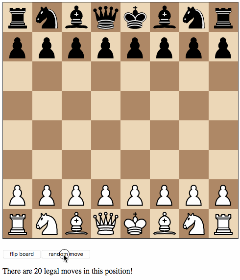
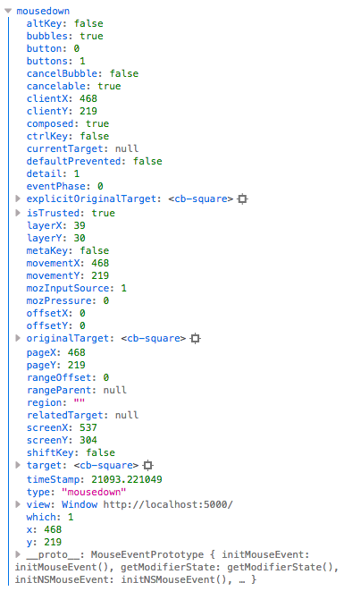
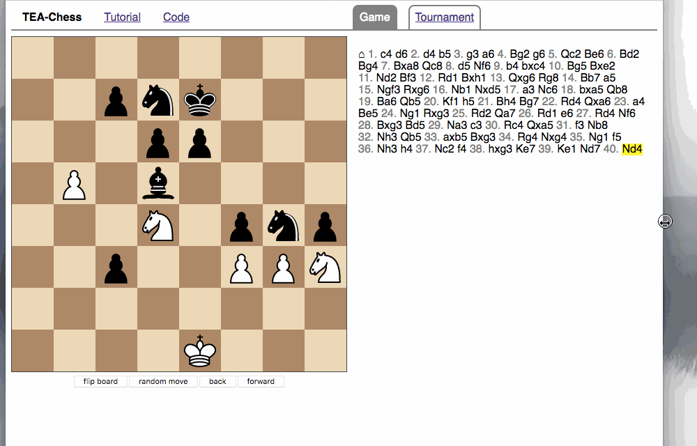

Chess in Bucklescript-TEA
This is a chess-themed tutorial on writing an SPA in Bucklescript-TEA. You will develop an app that looks like this demo, from scratch.
This tutorial was written in January 2018. Send comments by e-mail.
| Part I | First steps with Bucklescript-TEA | bsb, Tea, Tea.Html, Tea.App |
| Part II | A chessboard with random moves | Tea.Cmd, Tea.Random, composition |
| Part III | A drag and drop chessboard | Tea.Sub, Tea.Json, Tea.Mouse |
| Part IV | Moving in the move list | list zippers, keyboard events |
| Part V | AJAX, parsing and responsive CSS | Tea.Http, parser combinators |
| Part VI | Lenses, maps, and functors | Lens, Map.Make, functors |
| Part VII | Routing, local storage, computer matches | Tea.Navigation, Tea.Ex |
| Part VIII | A move tree | tree zippers, recursive views |
Table of Contents
- Part I: First steps with Bucklescript-TEA
- Part II: A chessboard with random moves
- Part III: A drag and drop chessboard
- Part IV: Moving in the move list
- Part V: AJAX, parsing and responsive CSS
- Part VI: Lenses, maps, and functors
- Part VII: Routing, local storage, computer matches
- Part VIII: A move tree view
Part I: First steps with Bucklescript-TEA
I recently started frontend web development in OCaml by using Bucklescript to compile my code into Javascript. Naturally, a functional language like OCaml goes well together with the famous Elm architecture, so I chose to explore the recent Bucklescript-TEA library. (TEA stands for “The Elm Architecture”, obviously.)
OCaml and Bucklescript have recently gained a lot of attention, not least because of Facebook’s Reason – an alternative, more Javascript-like syntax for OCaml. I prefer the traditional OCaml syntax, but you can use either syntax together with Bucklescript.
In this tutorial, I will walk you through an entire example of a single-page application. It will certainly help if you have a little experience with chess, web development and in particular functional programming in general or OCaml in particular, but it is no prerequisite, you can pick up everything you need on the way.
Getting started
Before you can setup Bucklescript, make sure you have the following installed:
- Node.js and optionally Yarn. Bucklescript piggybacks on the NPM package database, and you need NPM packages for Bucklescript development. I prefer Yarn as an interface to NPM and use Yarn commands throughout this tutorial, but if you are already using NPM, it will work just as fine.
- OPAM, the OCaml package manager. You can use Bucklescript without OPAM, but I strongly recommend you to use the excellent Merlin tool for an IDE-like experience in your editor. If you want to explore server-side OCaml as well, OPAM will allow you to switch between different versions of OCaml packages for server-side and client-side development seamlessly. Follow the instructions for switching to Bucklescript’s version of the OCaml compiler.
You can choose to install the main Bucklescript package bs-platform
globally or locally for every project. It is pretty hefty (it brings
its own OCaml compiler) and takes a while to setup, so I recommend
installing it globally with yarn global add bs-platform.
This gives you access to the binaries bsc (the Bucklescript
compiler) and bsb (the Bucklescript build system).
Let’s setup a project directory structure. You have two options:
If you don’t feel like setting up everything yourself, the easiest way
is to use the Bucklescript-TEA starter kit. This gives you a nice
starting point and even includes hot reloading. Clone the repository,
copy the relevant files into a fresh repository, or just follow along
with my repository. (I encourage you to use any version control system
that you are comfortable with – I actually used Fossil for local
version control.) If you type yarn install (or npm install), it
will install the dependencies (bs-platform, bucklescript-tea and
rollup for bundling). Make sure to run yarn link (in the global
location of bs-platform) and yarn link bs-platform first if you
have a global installation of bs-platform, otherwise you will get a
fresh local install. You are ready to start coding and can skip to the
next section.
Project setup from scratch
If you want to setup your project from scratch, first install
bs-platform globally if you haven’t. Then run bsb -init
tea-chess. This will initialize an empty Bucklescript project in the
directory tea-chess. Take a look at the files:
package.jsonis the place to declare your NPM dependencies and development dependencies, and to define build and watch scripts. A few scripts are already defined so that you can just runyarn run buildto compile your source files usingbsboryarn run watchto keep running in the background and compile your source files whenever you save them.bsconfig.jsoncontains instructions for the Bucklescript compiler. Bucklescript will look for source files in the directories listed insources.
Let’s add a devDependency for bucklescript-tea by running yarn
add -D bucklescript-tea. This will automatically update your
package.json. Since bucklescript-tea contains OCaml code, you need
to make Bucklescript aware of it by adding it to the bs-dependencies
in bsconfig.json as follows:
"bs-dependencies": [ "bucklescript-tea" ]
Now the bsb build tool has access to the sources of
bucklescript-tea.
We need one more tool to do meaningful development. Bucklescript itself translates one OCaml file into one Javascript file, so unless you want to do all your development in one big file (which I don’t think you will), you need a bundler to link the pieces together for the browser. I’m using Rollup, but you could also give Parcel, Browserify or Webpack a try. Especially Parcel, the “zero-configuration” application bundler, is a good choice if you just want to get things up and running. (Instructions below.)
Install the following NPM packages:
yarn add -D rollup yarn add -D npm-run-all yarn add -D rollup-plugin-node-resolve yarn add -D serve
With npm-run-all, we can build sequential and parallel build scripts
to run both Bucklescript and Rollup. The plugin
rollup-plugin-node-resolve is needed to find the right files to
bundle in the NPM packages you rely on, and the serve package gives
you a simple development webserver.
Here is my package.json with a few more tasks. I use run-s to run
the Bucklescript build system and Rollup sequentially in the build task, while in the
watch task I run the watchers and the webserver in parallel.
{
"name": "tea-chess",
"version": "0.1.0",
"scripts": {
"serve": "serve release",
"clean": "bsb -clean-world",
"build:bsb": "bsb -make-world",
"build:js": "rollup -c",
"build": "run-s build:bsb build:js",
"watch:bsb": "bsb -make-world -w",
"watch:js": "rollup -c -w",
"watch": "run-p watch:bsb watch:js serve"
},
"keywords": [
"BuckleScript"
],
"author": "Daniel Quernheim",
"license": "MIT",
"devDependencies": {
"bs-platform": "^2.1.0",
"bucklescript-tea": "^0.7.0",
"npm-run-all": "^4.1.2",
"rollup": "^0.53.3",
"rollup-plugin-node-resolve": "^3.0.0",
"serve": "^6.4.4"
}
}
When Rollup is run with the -c configuration option, it looks for a
file called rollup.config.js, so here it is. Rollup will look for
the file src/Main.bs.js and bundle it up with all the modules that
are referenced in it, in a big bundle release/main.js that will be
accessible in your Javascript as starter.
import resolve from 'rollup-plugin-node-resolve'; export default { input: './src/Main.bs.js', output: { file: './release/main.js', format: 'iife', name: 'starter' }, plugins: [ resolve() ] };
Rollup needs files in ES6 format, so we tell Bucklescript in
bsconfig.json:
{
"name": "tea-chess",
"version": "0.1.0",
"sources": [
"src"
],
"package-specs": {
"module": "es6",
"in-source": true
},
"suffix": ".bs.js",
"bs-dependencies": [
"bucklescript-tea"
]
}
For every .ml file in the directory src, it will create a
corresponding .bs.js file, so your main file will be src/Main.ml.
Before we can start coding, we need to set up an HTML page. Put the
following into release/index.html:
<!DOCTYPE html> <html lang="en"> <head> <meta charset="utf-8"> <meta http-equiv="X-UA-Compatible" content="IE=edge"> <meta name="viewport" content="width=device-width, initial-scale=1"> <title>TEA-Chess</title> </head> <body> <script src="main.js"></script> <script> setTimeout(function(){ var app = starter.main(document.body); }, 1) </script> </body> </html>
If you use the “zero-configuration” bundler Parcel, you need to
structure your code slightly differently. Here’s release/index.html:
<!DOCTYPE html> <html lang="en"> <head> <meta charset="utf-8"> <meta http-equiv="X-UA-Compatible" content="IE=edge"> <meta name="viewport" content="width=device-width, initial-scale=1"> <title>TEA-Chess</title> </head> <body> <script src="./index.js"></script> </body> </html>
And here’s release/index.js:
import * as starter from '../src/Main.bs.js'; setTimeout(function() { var app = starter.main(document.body); }, 1)
Then, parcel release/index.html will build your bundle without any
problems. This approach also works for Rollup (you just have to point
input to release/index.js and use <script
src="main.js"></script> in the HTML file instead).
The Elm architecture
Maybe you are familiar with the “Elm architecture”, made popular by the Elm language of Evan Czaplicki. Essentially, Bucklescript-TEA provides an API similar, if not almost compatible, to that of Elm’s. I’m not going to provide a thorough discussion in case you haven’t worked with the Elm architecture before. There are lots of resources online that do a better job I ever could do. For instance, check out the official tutorial. However, the Elm architecture is pretty simple to grasp if all you remember is this:
- Your program state is represented by a model.
- Whenever stuff happens (user clicks a button, AJAX data comes in, etc.), the update function receives a message and the current model and returns a new model.
- The view function computes a virtual DOM tree from the model (which is rendered to the screen).
Here’s an adorable illustration by Kolja Wilcke from his and Andrey Kuzmin’s talk on Creating a Fun Game With Elm:
Elm Architecture #illustration from our talk with @unsoundscapes @curry_on_conf pic.twitter.com/yTE5iivne7
— Kolja Wilcke (@01k) July 18, 2016
Side effects are managed behind the scenes to ensure that your functions stay pure. (A function is pure when it will always return the same output value when called with the same input arguments, and doesn’t cause any side effect.) Therefore, in the Elm architecture, you only deal with recipes for side effects, called commands. When you need to ask for a side effect to be performed, you can issue a command together with the new model in the update function. Your program can also listen to subscriptions to receive messages on events such as mouse and keyboard events, websockets, and time. Both commands and subscriptions will feed messages into your update function.
Your first app: A move counter
Let’s see the theory in practice. The typical beginner example is a
counter, but because this tutorial is chess-themed, we will build a
move counter showing whose turn to move it is. Open src/Main.ml.
If you started from scratch, it’s empty. If you used the starter kit,
there’s already a counter in there. Play with it. Read the code if
you want. Modify it. Then delete it. Just delete it. It’s more
satisfying to start from scratch.
Let’s first open the Tea module. It exposes a few submodules that
we will use often, and it doesn’t pollute the namespace, so we will
generally open it. (In OCaml, open imports all global let
definitions of a module.)
open Tea
Now let’s think about our model. It should represent how many moves
have been made (that’s easy – an int) and whose move it is. For
this purpose, let’s define a variant type color with two options.
That’s generally a better idea than using a bool, int or whatever
one might misuse because it’s more descriptive, less error-prone and
really easy to pattern-match.
type color = | Black | White type model = { moves : int ; turn : color }
Don’t be afraid of performance issues
– if you examine the JS output, you will see that the variants are
represented by integers under the hood anyway. The same goes for
records: there is no performance penalty for defining the model
record type (as opposed to, say, a tuple), because guess what – in JS
it’s just an array. But since OCaml knows what goes where, it will
ensure all operations are typesafe.
This is our initial model: We’re on move 1 and it’s White’s turn.
Note that we can have types and values/functions with the same name
(both are model) –
they don’t live in the same namespace.
let model = { moves = 1 ; turn = White }
Now we need to define our messages. The TEA way to do this is to use a variant type again. Here’s one message to get us started:
type msg = | Move
The magic happens in the update function. Remember that update
receives the model and a message and has to return a new model.
let update model = function | Move -> let turn = begin match model.turn with | Black -> White | White -> Black end in let moves = model.moves + 1 in { turn; moves }
So when the message is Move (our only message so far), we swap whose
turn it is around, increment the move count and return a new model.
We use a shorthand way called field punning to construct the new
record. Because our variables are named just like the record fields,
we can write { turn; moves } instead of { turn = turn; moves =
moves }.
Why does it look like update only receives one argument when it
should be two? That’s just a
shorthand way of matching the last argument without explicitly naming it:
let update model msg = match msg with | Move -> (* ... *)
If for some reason you need a message that doesn’t trigger any action, define a
No_op variant and add a case in the update function that just
returns the model. But think about whether it’s necessary in the
first place.
Now we only need a view function to render the counter in the
browser. All you need to render HTML is in Bucklescript-TEA’s Html
module. Tags are defined functions take two arguments: a list of attributes
and a list of children. Of course, they can be nested.
Let’s build a simple view. I generally prefer to open Html locally
to save tons of keystrokes. We’ll have a <div> with two paragraphs,
one to tell you whose move it is, and one with a button to make a
move. We use Printf.sprintf to format a string and pipe it into the
text function that builds a DOM text node. (The pipe |> operator
takes what’s left of it and passes it as the last argument to what’s
right of it.)
The button has a special attribute: onClick is a function that takes
a msg and creates an event listener that will trigger that message
when the button is clicked. That way, view and update are linked.
And that’s how we closed the loop.
let view model = let open Html in div [] [ p [] [ Printf.sprintf "Move %d. It is %s's move." model.moves (match model.turn with | Black -> "Black" | White -> "White") |> text ] ; p [] [ button [ onClick Move ] [ text "Make a move!" ] ] ]
Finally, we put all the pieces together to make the app. The function
main is then called from the Javascript side to launch it.
let main = App.beginnerProgram { model ; update ; view }
I generally use yarn run watch to have Bucklescript compile my
source in the background whenever I save a file, and to run a little
webserver. When everything goes well, it will display something like
this:
rollup v0.53.3 bundles ./src/Main.bs.js → release/main.js... ┌─────────────────────────────────────────────────┐ │ │ │ Serving! │ │ │ │ - Local: http://localhost:5000 │ │ - On Your Network: http://192.168.1.5:5000 │ │ │ │ Copied local address to clipboard! │ │ │ └─────────────────────────────────────────────────┘ created release/main.js in 2.1s [2018-01-11 16:37:24] waiting for changes...
Whenever something breaks, it will display the error and keep recompiling until you get it right :-)
Part II: A chessboard with random moves
Merlin
If you installed Merlin, you can use it to examine the types of the functions involved in the Elm Architecture. (For instance, if you’re using Emacs, press C-c C-t, and Merlin will tell you the type of the function name at the point (cursor). Press C-c C-l, and it will take you to the definition of the function.)
updateis of typemodel -> msg -> model, meaning it takes a model and a message from the variant typemsg, and returns a new model.viewhas typemodel -> msg Vdom.t. This means it takes a model and returns a virtual DOM element that can trigger messages of typemsg. We say thatmsg Vdom.tis a parameterized type.
Of course, OCaml will be extremely strict to enforce correct types, so whenever you make a type-related mistake, it will refuse to compile your code. This may sound painful, but I find that not only does it catch zillions of bugs before they hit the user, it also really helps with refactoring. Also, OCaml will infer almost every type automatically, leaving you without the need to explicitly annotate types.
Using existing code
Just like Google’s recent success with AlphaZero, we will only need to spell out the rules of chess, and our program will learn how to display the chessboard and play against itself. That’s it, folks! See you next time! Well… that would be nice, but last time I checked, no neural network was able to write frontend code. That might change, but for now we still have to invest some human labour. At least we can save a few hours of work by pulling in a decent chess library.
Bucklescript makes it really easy to use existing OCaml code when it
is packaged up as an NPM package. Just mention the dependencies in
bsconfig.json, and bsb will automatically compile the
OCaml modules that you need. Unfortunately, I didn’t find
any open-source implementation of chess that I liked on either NPM or OPAM, not
even on Github for that matter, so I decided to use good old
MIT-licensed O’Chess by Oleg Trott. You have two options:
- Just download it and throw it in your
srcdirectory. - Use my packaged bundle.
Let’s see what happens if you go for the first option like I did. In fact, O’Chess defines a
color type just like we did, so we could replace our type definition by:
type color = Ochess.color
However, the build script will yell at you:
We've found a bug for you! /Users/daniel/Playground/tea-chess/src/ochess.ml 43:6-8 41 │ open Printf 42 │ open Sys 43 │ open Str 44 │ 45 │ (* The module or file Str can't be found.
This is because Bucklescript differs from the standard OCaml
distribution in a few ways; it doesn’t contain the Str module.
Fortunately, this only affects a small portion of the code, and is
easily remedied by providing our own function to split a string.
While I was at it, I got rid of all the warnings by prefixing all
unused variables with _ and by replacing or with ||. I also
disabled the main function of O’Chess to prevent it from being
evaluated automatically. I also fixed two minor bugs in the chess
logic.
So I recommend you either pick up my updated version from Github or
just pull it in as an NPM devDependency by typing yarn add -D
github:quernd/ochess. Then update your bsconfig.json:
{
"name": "tea-chess",
"version": "0.1.0",
"sources": [
"src"
],
"package-specs": {
"module": "es6",
"in-source": true
},
"suffix": ".bs.js",
"bs-dependencies": [
"bucklescript-tea",
"ochess"
],
"bsc-flags": [
"-bs-super-errors",
"-w -23"
]
}
I also added two flags to pass to the Bucklescript compiler. If you
like the “Elm style” error messages, put -bs-super-errors in there.
Also, I disabled warning 23 (“all the fields are explicitly listed in this record:
the ‘with’ clause is useless.”), but that’s of course personal
preference. Learn more about bsb configuration.
Now O’Chess should work.
Not a beginner anymore
Let’s make a more useful app. How about a chessboard and a button to flip it around, as well as a button to make a random move?
First, since we’re not beginners anymore, we’ll “upgrade” from
beginnerProgram to standardProgram:
let main = App.standardProgram { init ; update ; view ; subscriptions = (fun _ -> Sub.none) }
This entails three changes:
- We need to declare subscriptions. We use subscriptions to be notified of things like time or mouse and keyboard events. TEA expects a function that maps the model to the relevant subscriptions, so we just tell it that regardless of the model we have no subscriptions.
The variable _ is an anonymous variable; any variable
prefixed with an underscore will not cause the compiler to complain
about unused variables. In general, you should use these and also
take the compiler warnings seriously. An unused variable could
likely be a typo or a bug!
- We need to declare commands. In the
updatefunction, we need to return a command along with the model to tell TEA what side effects we want to perform. The result will come back as a message, so the command type is always parameterized with a message type. When we don’t want to issue a command, we just returnCmd.none.
let update model = function | Move -> let turn = Ochess.opposite_color model.turn in let moves = model.moves + 1 in { turn; moves }, Cmd.none
initnow needs to be a function that takes an argument (this is where initialization data could be passed in from Javascript) and returns a model and a command. We don’t expect any data and also don’t want to issue a command.
let init () = { moves = 1 ; turn = White }, Cmd.none
Chessboard powered by O’Chess
Let’s implement a chessboard that shows a given position and can be flipped.
O’Chess provides a type representing a position, so our model now
looks like this. Note how I import Ochess under a different name.
(I’ll tell you why in a second.)
module Chess = Ochess type model = { position : Chess.position ; orientation : Chess.color }
A chessboard has 8 rows commonly called ranks and 8 columns called files. For the orientation, the convention is that when viewed from the perspective of the White player, the White pieces are on the bottom two ranks in the initial position, and the Black pieces occupy the top two ranks. White pieces start on ranks 1 and 2, and Black pieces start on ranks 7 and 8. Files are labeled with letters. From White’s point of view, the ’a’ file is the leftmost in the starting position, and the ’h’ file is the rightmost. O’Chess represents the board as an 8*8 array of ranks and files where the ’a’ file is file 0.
I modified msg, init and update a little to prepare for the
next section already. We will use the Random_move message with a
“payload” of a Chess.move, but we don’t handle any of the “random”
messages just yet. The Flip_board message causes the orientation to
be changed, and we use the with syntax to update the record.
(Fields that are not mentioned remain unchanged.)
type msg = | Flip_board | Random_button | Random_move of Chess.move let init () = { position = Chess.init_position ; orientation = White }, Cmd.none let update model = function | Flip_board -> { model with orientation = Chess.opposite_color model.orientation }, Cmd.none | _ -> model, Cmd.none
You can use a “catch-all” clause in a match or function pattern
matching by using an anonymous variable, but use it sparingly; it’s
better to spell out all the possible patterns.
Now let’s try to use O’Chess to render the chessboard. Here’s a
board_view function:
let board_view model = let open Html in let files, ranks = match model.orientation with | White -> [0; 1; 2; 3; 4; 5; 6; 7], [7; 6; 5; 4; 3; 2; 1; 0] | Black -> [7; 6; 5; 4; 3; 2; 1; 0], [0; 1; 2; 3; 4; 5; 6; 7] in let rank_view rank = let square_view rank file = let piece_view = match model.position.ar.(file).(rank) with | Chess.Piece (piece_type, color) -> node "cb-piece" [ classList [ Chess.string_of_color color, true ; Chess.string_of_piece_type piece_type, true ] ] [] | Chess.Empty -> noNode in node "cb-square" [] [piece_view] in List.map (square_view rank) files |> node "cb-row" [] in List.map rank_view ranks |> node "cb-board" []
This might be a lot of code at once, so let’s walk through it line by line. Depending on the orientation of the chessboard, we need to go through the files and ranks in different order. For instance, when viewing the board from Black’s perspective, the leftmost file is the ’h’ file (file 7 in O’Chess’s representation), but the uppermost rank is rank 0 (the first rank).
We then define the rank_view as a local function, and inside it the
square_view for a given rank and file. Note how the inner
functions have access to values defined in the outer functions. We
access the board array with .(file).(rank) and pattern-match on the
square. If it is empty, we still need to return a DOM node, so we use a placeholder noNode, defined by
Bucklescript-TEA, that will only show up in the DOM as a comment. If
the square is not empty, we return a custom tag <cb-square>
(browsers don’t know this tag, but they will render it and we can use
CSS to style it). We can always use node to render any tag.
Consider the partial application node "cb-piece". Since node has
the type ?namespace:string -> string -> ?key:string -> ?unique:string
-> 'a Vdom.properties -> 'a Vdom.t list -> 'a Vdom.t, it will have
type ?key:string -> ?unique:string -> '_a Vdom.properties -> '_a
Vdom.t list -> '_a Vdom.t, just like the functions for “normal” tags
like div.
We assign CSS classes using the classList function to assign many
classes at once. This function takes pairs of class names and boolean
flags to determine whether these class names should be “switched on”
or “switched off”. We will use the class names to render the actual
pieces, therefore we encode piece type and color in them.
There is also class' (not class as that is an OCaml keyword) to set one class, but be
careful and don’t use it twice because the second will override the
other.
We then use List.map to construct a rank from the squares, and a
board from the files. List.map is a staple in functional
programming: takes a function and a list, applies
the function to every item of the list and returns the list of
results.
Here’s the main view:
let view model = let open Html in div [] [ board_view model ; p [] [ Printf.sprintf "Move %d. It is %s's move." model.position.number (match model.position.turn with | Black -> "Black" | White -> "White") |> text ] ; p [] [ button [ onClick Flip_board ] [ text "Flip board" ] ; button [ onClick Random_button ] [ text "Make a random move!" ] ] ]
There’s just one thing missing! We didn’t define
Chess.string_of_piece_type and Chess.string_of_color yet. Instead
of hacking them into O’Chess, we’ll extend O’Chess by opening a
file src/Chess.ml and adding:
include Ochess let string_of_piece_type = function | King -> "king" | Queen -> "queen" | Rook -> "rook" | Bishop -> "bishop" | Knight -> "knight" | Pawn -> "pawn" let string_of_color = function | White -> "white" | Black -> "black"
That’s it! The difference between open and include is that
include also passes on all imported values to other modules; so now
we don’t need module Chess = Ochess in src/Main.ml anymore. All the
functionality of the Ochess module is now available through the
Chess module.
An .ml source file defines its own module. Just take its name and
capitalize the first letter. (Module names in OCaml always start with
an uppercase letter.) Of course, you can define modules inside
modules; more on that topic later.
See if a chessboard is rendered to the screen. Or rather, check the developer tools to see if anything shows up in the DOM tree. If there’s the structure of a chessboard, let’s move on to styling the board.
I used CSS for styling that was inspired by a popular JS chessboard.
If you need more inspiration, you should also look at Chessground, the
library used by the open-source, donation-based free Lichess internet
chess server. Put this in a file release/css/board.css:
cb-board { display: inline-block; border: 1px solid #444; box-sizing: content-box; width: 480px; height: 480px; } cb-row:after { display: block; clear: both; } cb-row:nth-child(even) cb-square:nth-child(even) { background-color: #eeeeee; color: #aabbcc; } cb-row:nth-child(even) cb-square:nth-child(odd) { background-color: #aabbcc; color: #eeeeee; } cb-row:nth-child(odd) cb-square:nth-child(even) { background-color: #aabbcc; color: #eeeeee; } cb-row:nth-child(odd) cb-square:nth-child(odd) { background-color: #eeeeee; color: #aabbcc; } cb-square { float: left; position: relative; display: inline-block; width: 12.5%; height: 12.5%; } cb-piece { position: absolute; bottom: 0; left: 0; width: 100%; height: 100%; background-size: cover; z-index: 1; } cb-piece.white.king { background-image: url("/img/pieces/wK.svg"); } cb-piece.white.queen { background-image: url("/img/pieces/wQ.svg"); } cb-piece.white.rook { background-image: url("/img/pieces/wR.svg"); } cb-piece.white.bishop { background-image: url("/img/pieces/wB.svg"); } cb-piece.white.knight { background-image: url("/img/pieces/wN.svg"); } cb-piece.white.pawn { background-image: url("/img/pieces/wP.svg"); } cb-piece.black.king { background-image: url("/img/pieces/bK.svg"); } cb-piece.black.queen { background-image: url("/img/pieces/bQ.svg"); } cb-piece.black.rook { background-image: url("/img/pieces/bR.svg"); } cb-piece.black.bishop { background-image: url("/img/pieces/bB.svg"); } cb-piece.black.knight { background-image: url("/img/pieces/bN.svg"); } cb-piece.black.pawn { background-image: url("/img/pieces/bP.svg"); }
I won’t go into detail about everything, but notice how the
checkerboard pattern is achieved by the use of :nth-child(even) and
:nth-child(odd) pseudo selectors, and how the pieces images are
inserted depending on the class names that we set.
Don’t forget to mention the stylesheet in the <head> of
release/index.html:
<link rel="stylesheet" type="text/css" href="css/board.css">
Now we only need
piece files. I used the GFDL/GPL/BSD-licenced pieces by Colin M.L.
Burnett designed for Wikipedia. Here are some more alternatives.
Drop them in the directory release/img and you should be good to go!
Your first commands: Random moves
Now let’s wire our “random” messages. We have message Random_button
that is triggered when the user clicks the button. Because all side
effects are managed by TEA, and random number generation is a side
effect, we have to wrap it into a command that will return a message.
We want the message to return a chess move, hence our msg type:
type msg = | Flip_board | Random_button | Random_move of Chess.move
Without further ado, here’s your first command:
let update model = function (* ... *) | Random_button -> model, begin match Chess.game_status model.position with | Play move_list -> move_list |> List.length |> Random.int 0 |> Random.generate (fun random_number -> List.nth move_list random_number |> random_move) | _ -> Cmd.none end
When the Random_button is received, the model is unchanged, so it is
returned as is, but a command is issued. This is a tricky one, so
let’s examine it: First, we ask O’Chess about the status of the game.
The return value is a variant type that’s either Play move_list
(the game is ongoing, and there are legal moves to be played in this position) or a result
(that means the game is over). When the game is not over, we
determine the length of the move list to construct a random number
generator using Random.int (provided by TEA). Notice how we use
pipes, so it boils down to Random.int 0 (List.length move_list)
(we’re asking for a random number between 0 and the length of the
list, i.e. an index).
However, we’re not allowed to call this
generator directly as that would cause a side effect, so we hand it
off to Random.generate along with a function that creates a message
from the random number. We use List.nth to extract a move from the
move list and wrap it in a Random_move message.
If you’re attentive, you notice two things:
random_moveis suddenly lowercase- the code will not run!
If you think I made a typo and changed random_move into
Random_move, the code will still not run! That’s because
Random_move looks like it’s a function that takes an Ochess.move
and turns it into a message, but it’s not. It’s a variant
constructor, and they’re not the same thing. But what we need is a
function that takes a move and returns a message. There are two ways to
work around that:
- make a function
(fun move -> Random_move move) - have Bucklescript auto-generate this function for you
If you’re lazy like me, you just need to put a little magic annotation under your variant type declariations like this:
type msg = | Flip_board | Random_button | Random_move of Chess.move [@@bs.deriving {accessors}]
Now Bucklescript will automatically derive these functions for you with an initial lowercase letter, and you can use them like I did above. In general, Bucklescript annotations are use for BS/JS interop.
When the Random_move message comes back, we use O’Chess to actually
make the move on the chessboard:
let update model = function (* ... *) | Random_move move -> let position = Chess.make_move model.position move 0 in { model with position }, Cmd.none
(If you’re wondering about the 0 at the end of the make_move call,
that’s because O’Chess also is a chess engine and stores position
evaluation, so it needs to know how to update the position evaluation.
Just disregard it.)
Since the model was updated, the view function will rerender the
chessboard. Try it out! It should look a little like this:

Composing views and models
Let’s pull out the code for the chessboard into its own Board module by
refactoring the code. When you split up TEA code into modules, you
can still applying model-view-update by considering:
- What’s the data that should be stored in a submodel? For instance, our board will have its own model storing the orientation, but not the position as that is managed by the main app.
- What messages should my submodule contain? Here,
Flip_msgclearly needs to go into theBoardmodule because it will be handled board-internally.
This way, your architecture will be clean and compositional.
Start by pulling out the relevant parts into src/Board.ml:
open Tea type msg = | Flip_board [@@bs.deriving {accessors}] type model = { orientation : Chess.color } let init = { orientation = Chess.White } let update model = function | Flip_board -> { model with orientation = Chess.opposite_color model.orientation }, Cmd.none let flip_button_view = let open Html in button [ onClick Flip_board ] [ text "Flip board" ] let view pos_ar model = let open Html in let files, ranks = match model.orientation with | White -> [0; 1; 2; 3; 4; 5; 6; 7], [7; 6; 5; 4; 3; 2; 1; 0] | Black -> [7; 6; 5; 4; 3; 2; 1; 0], [0; 1; 2; 3; 4; 5; 6; 7] in let rank_view rank = let square_view rank file = let piece_view = match pos_ar.(file).(rank) with | Chess.Piece (piece_type, color) -> node "cb-piece" [ classList [ Chess.string_of_color color, true ; Chess.string_of_piece_type piece_type, true ] ] [] | Chess.Empty -> noNode in node "cb-square" [] [piece_view] in List.map (square_view rank) files |> node "cb-row" [] in List.map rank_view ranks |> node "cb-board" []
I also pulled out the “flip” button so that the main app can choose to use it or not.
What remains in src/Main.ml is:
open Tea open App type model = { position : Chess.position ; board : Board.model } type msg = | Board_msg of Board.msg | Random_button | Random_move of Chess.move [@@bs.deriving {accessors}] let init () = { position = Chess.init_position ; board = Board.init }, Cmd.none
A board model is now part of the main model. In order to make our app
aware of board messages, we need to tag them by giving them a dedicated
variant constructor. The reason is that the type msg is not
compatible with Board.msg. We cannot just ignore board messages
though – since there is only one central message loop, we need to
process them by handing them to Board.update.
The update function is a little tricky now. Whenever we receive a
Board_msg, we unwrap it and hand it to Board.update, which will
return a new board model and a command. However, the command is of
type Board.msg Cmd.t which is not compatible with update’s return
type msg Cmd.t.
In TEA, there’s a clever solution for this problem: we use Cmd.map
to modify the command cmd by tagging every message that it might
return with Board_msg (again, we make use of the auto-derived
function board_msg).
Cmd.map’s signature is ('a -> 'b) -> 'a Tea.Cmd.t -> 'b Tea.Cmd.t,
meaning that it takes a function that turns messages of type 'a into
messages of type 'b (the tagging function) and a command triggering
messages of type 'a to give us a command triggering messages of type
'b. In this case, 'a is Board.msg and 'b is msg.
let update model = function | Board_msg msg -> let board, cmd = Board.update model.board msg in { model with board }, Cmd.map board_msg cmd | Random_button -> model, begin match Chess.game_status model.position with | Play move_list -> move_list |> List.length |> Random.int 0 |> Random.generate (fun random_number -> List.nth move_list random_number |> random_move) | _ -> Cmd.none end | Random_move move -> let position = Chess.make_move model.position move 0 in { model with position }, Cmd.none
A similar workaround is needed in the view function. Here, we need
to tag any subview that we embed that might trigger a message. (If it
doesn’t, we don’t need to tag it because OCaml’s type inference will
infer a generic type that’s compatible with msg, but both
Board.view and Board.flip_button_view do trigger messages of type
~Board.msg.)
Bucklescript-TEA provides Vdom.map (also available as App.map),
and since we already opened Tea.App, we can just use it as map.
Its signature is ('a -> 'b) -> 'a Vdom.t -> 'b Vdom.t.
let view model = let open Html in div [] [ Board.view model.position.ar model.board |> map board_msg ; p [] [ Printf.sprintf "Move %d. It is %s's move." model.position.number (match model.position.turn with | Black -> "Black" | White -> "White") |> text ] ; p [] [ map board_msg Board.flip_button_view ; button [ onClick Random_button ] [ text "Make a random move!" ] ] ]
Part III: A drag and drop chessboard
Drag and drop: defining messages
So that’s nice, but why can’t I make a move? you ask. Let’s implement
some drag and drop on the board. It would be nice to get visual
feedback when we “lift” a piece about what squares it can go. Also,
only pieces of the side whose turn it is should be able to be lifted.
Let’s sketch out some types and messages in src/Board.ml:
open Tea open Chess type size = int type move' = | Completed_move of move | Pawn_will_promote
This is a helper type that wraps Chess.move because when a pawn is
dropped on the furthest rank, it needs to be promoted to another
piece. All other piece drops on a possible target complete a move.
type dragging = { turn : color ; source : square ; target : square option ; legal_targets : (square * move') list ; initial : Mouse.position ; offset : Mouse.position ; coordinates : Mouse.position ; size : size } type state = | Dragging of dragging | Nothing [@@bs.deriving {accessors}] type interactable = | Not_interactable | Interactable of color * move list [@@bs.deriving {accessors}]
The state of the board is either “dragging” or “not dragging”. When
dragging, we keep a record of useful info, such as the source square
and the target square. While moving the piece around, the target
square will be updated. Since the mouse might not be over a square,
we represent this as a square option.
The built-in type option
is used to represent a value that might be absent. This is a
type-safe way to deal with uncertainty. Instead of checking for
“null” or “undefined”, you pattern match it with Some value or None.
We also keep track of coordinates (with the type TEA.Mouse.position)
and the list of legal targets where the piece may be dropped. The list of legal target squares as well as what pieces can be interacted with (type interactable) will be supplied from the outside to the view function together with the position.
type model = { orientation : color ; state : state } type internal_msg = | Flip_board | Move_start of dragging | Move_drag of Mouse.position | Move_drop of Mouse.position | Square_entered of square | Square_left of square [@@bs.deriving {accessors}] type msg = | Internal_msg of internal_msg | Move of move [@@bs.deriving {accessors}] let update model = function | Internal_msg Flip_board -> { model with orientation = Chess.opposite_color model.orientation }, Cmd.none | _ -> model, Cmd.none
The board’s model is now composed of orientation and dragging state,
and we distinguish between “internal” and “external” messages. Recall
that there is only one central message loop. That means the
“parent” update function will receive the messages that are to be handled
by the children, but it also means it can act on messages that the
children send out. When the Board module triggers an internal
message, we’ll instruct our main update function to just pass the
message on, but we will make sure to handle the Move message when a
move has been made on the board.
This is a very simple pattern of child-to-parent communication (it has
been called “naive”), but
not the only possible pattern. Another way is to change the signature
of Board.update to return an optional message in addition to model
and command. This has been described for Elm but of course also works
in Bucklescript-TEA. Another pattern, the “translator pattern”, also
uses child-internal messages, but adds
a translation function to the “tagger” to map child messages to different parent
messages.
We actually need to define the types file, square and rank. I
like to define types like these even when they’re really just
integers, because it makes it easier to understand what’s going on
when looking at function signatures and type definitions. I defined
these types in src/Chess.ml:
type file = int type rank = int type square = file * rank
JSON decoders
In order to setup our Dragging record, we need to be able to listen
for and decode
mouse events. Bucklescript-TEA supplies onMouseDown, but it will
not give us access to the event, just the fact that the mouse button
was pressed. We can listen for arbitrary events on DOM nodes with
onCB which has the signature string -> string -> (Web.Node.event ->
'a option) -> 'a Vdom.property. The first string argument is the
event to listen for (e.g. mousedown or mousemove), the second is
a key (we will not use it), and the third is the important part: a
function that turns an event into a message option. If it is Some
msg, msg will be fed into the message loop; if it is None,
nothing happens.
If you worked with events before, you know that they are JSON data. The problem with JSON is that is untyped, but we need to assign a type to the data that we want to extract from the event.
Here’s a typical mousedown event:

We don’t need all that data, but we also don’t want to write a type that represents the entire data structure. For instance, to start the dragging, we only need the position of the mouse on the page, the size of the square and the offset of the mouse pointer within the square.
The TEA way to do extract the relevant data is to use JSON decoders. A JSON decoder is a
function that takes a JSON object and returns a certain part of it in
a given format. A decoder is either simple or a combination of other
decoders by means of a combinator. Bucklescript-TEA ships with a
bunch of decoders that live in the module Tea.Json. Simple decoder
like int and string, as well as field to access object fields,
are the basic building blocks.
Then there are decoders that combine decoders into a bigger decoder
such as map2. Here are the decoders we will need for the
mousedown and mousemove events:
let cartesian_decoder field_x field_y = let open Json.Decoder in map2 (fun x y -> Mouse.{x; y}) (field field_x int) (field field_y int) let page = cartesian_decoder "pageX" "pageY" |> Json.Decoder.decodeEvent let offset_page_size = let open Json.Decoder in let size = field "clientWidth" int in map3 (fun a b c -> a, b, c) (cartesian_decoder "offsetX" "offsetY") (cartesian_decoder "pageX" "pageY") (field "target" size) |> decodeEvent
The first, cartesian_decoder is a template for arbitrary decoders
with two fields. It uses two field decoders for the given fields
and returns a record {x; y} (of type Mouse.position, that’s why we
have to prefix it with Mouse – alternatively, we could open Mouse
or annotate the type explicitly).
Notice how map2 takes a function that combines the output of the two
decoders it takes as its other arguments.
We use cartesian_decoder to create a decoder for the coordinates
relative to the page. A decoder itself doesn’t decode, it needs to be
supplied as the first argument to Tea.Json.Decoder.decodeEvent.
Hence, page has the signature Web_node.event ->
(Tea.Mouse.position, Tea.Json.Decoder.error) Tea_result.t, in other
words it takes an event and returns either a Mouse.position or an
error.
The last decoder is more complicated because it nests decoders.
Notice how the field target is decoded with the decoder size,
which in turn accesses the field clientWidth.
In order to turn the event into a message, we need a function that
decodes the events and puts the relevant data into the payload of the
message. Here’s a generic function that works for any decoder and any
message. Notice how the result type is similar to option, but
also has information in the event of a decoder error. We disregard
that and just turn it into an option, and voilà – we have the
function we needed!
let handler decoder msg event = match decoder event with | Result.Ok result -> Some (msg result) | Result.Error _ -> None
CSS for drag and drop
Now let’s wire it to the squares. I chose to listen to events on the
squares instead of on the pieces because it simplifies things. You
see, normally only the topmost DOM element receives mouse events. So
for instance, when there is a <cb-piece> covering a <cb-square>,
the <cb-piece> will receive all the events. So far, so good –
unfortunately, when the piece is dragged, it will not let any events
go through because it is always under the mouse pointer, so we will
not know when a square is entered or left.
Fortunately, there is a way in CSS to fix this issue: you can tell
elements to receive or to not receive mouse events. I went the
radical path and just handle all mouse events on the squares. The
pieces receive no mouse events, and also the squares only receive
events when there is a piece on them, or generally a piece is being
dragged. Here’s the CSS you need (in /release/css/board.css):
cb-piece { /* ... */ pointer-events: none; } cb-piece.dragged { z-index: 9; } cb-board.dragging { cursor: pointer; } cb-square:not(:empty) { cursor: pointer; } cb-square.destination { background-image: radial-gradient(rgba(20,30,50,0.3) 20%, rgba(0,0,0,0) 0); } cb-square.destination:not(:empty) { background-image: radial-gradient(transparent 0%, transparent 80%, rgba(20,30,50,0.3) 80%); } cb-square.destination.hovering { background-image: linear-gradient(rgba(20,30,50,0.3), rgba(20,30,50,0.3)); } cb-square:empty { pointer-events: none; } cb-board.dragging cb-square { pointer-events: auto; }
Starting the drag
When the mouse is pressed on an “inhabited” square with a piece that belongs to the user whose turn it is, the drag needs to be started. Here are some helper functions that build the appropriate message according to how “interactable” the board is:
let filter_targets source moves = List.filter (fun ((s, _t), _m) -> s = source) moves |> List.map (fun ((_s, t), m) -> t, m) let completed_move = function | Promotion _ -> Pawn_will_promote | move -> Completed_move move let coordinate_pairs turn move = Chess.coordinate_pairs turn move, completed_move move let move_start interactable = match interactable with | Interactable (turn, legal_moves) -> Some (turn, fun file rank (offset, coordinates, size) -> Internal_msg (Move_start { turn ; source = (file, rank) ; target = None ; legal_targets = legal_moves |> List.map (coordinate_pairs turn) |> filter_targets (file, rank) ; initial = coordinates ; offset ; coordinates ; size } ) ) | Not_interactable -> None
When the board is interactable, the function move_start returns
whose turn it is and a function that emits a message when called with
file, rank and the relevant coordinates of the mouse event. Already
here, moves are filtered by the source square, and the target
coordinates are computed so we will be able to provide visual feedback.
The function Chess.coordinate_pairs converts the O’Chess move format
into file/rank coordinates. It’s mainly needed because there are some
special moves like castling and pawn promotion.
let home_rank = function White -> 0 | Black -> 7 let promotion_rank = function White -> 7 | Black -> 0 let pre_promotion_rank = function White -> 6 | Black -> 1 let coordinate_pairs turn = function | Queenside_castle -> (4, home_rank turn), (2, home_rank turn) | Kingside_castle -> (4, home_rank turn), (6, home_rank turn) | Promotion (_piece_type, s_file, t_file) -> (s_file, pre_promotion_rank turn), (t_file, promotion_rank turn) | Move (s_file, s_rank, t_file, t_rank) -> (s_file, s_rank), (t_file, t_rank)
Here’s our view function now.
let view interactable pos_ar model = let open Html in let files, ranks = match model.orientation with | White -> [0; 1; 2; 3; 4; 5; 6; 7], [7; 6; 5; 4; 3; 2; 1; 0] | Black -> [7; 6; 5; 4; 3; 2; 1; 0], [0; 1; 2; 3; 4; 5; 6; 7] in let drag_transform drag = Printf.sprintf "translate(%dpx,%dpx)" (drag.offset.x - (drag.size / 2) + drag.coordinates.x - drag.initial.x) (drag.offset.y - (drag.size / 2) + drag.coordinates.y - drag.initial.y) |> style "transform" in let target_highlight drag target = match drag.target with | Some square when square = target -> true | _ -> false and legal_highlight drag target = List.exists (fun (square, _) -> square = target) drag.legal_targets in let rank_view rank = let square_view rank file = let piece_view, listener = match pos_ar.(file).(rank) with | Chess.Empty -> noNode, noProp | Chess.Piece (piece_type, color) -> let drag_origin, transform = match model.state with | Dragging drag when (file, rank) = drag.source -> true, drag_transform drag | _ -> false, noProp in node "cb-piece" [ transform ; classList [ Chess.string_of_color color, true ; Chess.string_of_piece_type piece_type, true ; "dragged", drag_origin ] ] [], match move_start interactable with | Some (turn, msg) when color = turn -> onCB "mousedown" "" (msg file rank |> handler offset_page_size) | _ -> noProp in node "cb-square" (listener:: match model.state with | Dragging drag -> [ classList [ "destination", legal_highlight drag (file, rank) ; "hovering", target_highlight drag (file, rank) ] ; onMouseEnter (Internal_msg (Square_entered (file, rank))) ; onMouseLeave (Internal_msg (Square_left (file, rank))) ] | _ -> [noProp; noProp; noProp]) [piece_view] in List.map (square_view rank) files |> node "cb-row" [] in List.map rank_view ranks |> node "cb-board" []
I will not explain every single token (you should study it for yourself), but if notice especially the following things:
- how CSS
transform: translateis used to simulate dragging of the piece; - how the piece is given different properties when it is dragged,
based on pattern matching of
model.state(we use awhenguard here); - how the
msgfunction is
partially applied with file and rank when the piece is
interactable, and used to dispatch a message upon decoding of the
event;
- how we need to use
[noProp; noProp; noProp]in one case because the VDOM implementation of Bucklescript-TEA likes attribute lists to be always the same length.
This goes together with our update function, which now looks like this:
let update model = function | Internal_msg msg -> begin match msg, model.state with | Flip_board, _ -> { model with orientation = Chess.opposite_color model.orientation }, Cmd.none | Move_start drag, _ -> { model with state = Dragging drag }, Cmd.none | Move_drag coordinates, Dragging drag -> { model with state = Dragging { drag with coordinates } }, Cmd.none | Square_entered square, Dragging drag -> { model with state = Dragging { drag with target = Some square } }, Cmd.none | Square_left _, Dragging drag -> { model with state = Dragging { drag with target = None } }, Cmd.none | Move_drop _, Dragging drag -> begin match drag.target with | Some target -> begin try match List.assoc target drag.legal_targets with | Completed_move move -> { model with state = Nothing }, Cmd.msg (Move move) | Pawn_will_promote -> { model with state = Nothing }, Cmd.none with Not_found -> { model with state = Nothing }, Cmd.none end | None -> { model with state = Nothing }, Cmd.none end | _ -> model, Cmd.none end | _ -> model, Cmd.none
For now, we will be lazy and not care about pawn promotion. Any other
move is fine, as long as it’s legal, and will trigger a Move
message. That’s possible by issuing a command with Cmd.msg that
throws whatever message we would like into the loop.
When the Move_start message is received, the state is set to
Dragging drag. When the Move_drag message is received, if the
state is Dragging, the drag gets updated with the coordinates.
Square_entered and Square_left update the target square.
But how do we send the message Move_drag? It needs to be a global
listener. Here’s how subscriptions come into play.
Your first subscriptions: Mouse events
We want two global listeners. They can’t be board-local because the
user may move the mouse or even drop a piece outside the board.
Therefore, we register two subscriptions when the board’s state is
Dragging _:
let subscriptions model = match model.state with | Dragging _ -> Sub.batch [ Mouse.moves (fun x -> Internal_msg (Move_drag x)) ; Mouse.ups (fun x -> Internal_msg (Move_drop x)) ] | _ -> Sub.none
These are already “pre-decoded”, i.e. the Mouse.moves and
Mouse.ups subscriptions of Bucklescript-TEA just pass
coordinates to our messages. Note how Sub.batch turns a list of
subscriptions into one subscription.
The subscriptions need to be wired in src/Main.ml as well:
let subscriptions model = Board.subscriptions model.board |> Sub.map board_msg
By now, I’m sure you notice the map pattern! Now try moving pieces
around. Drop them. Just one thing that’s missing: in src/Main.ml,
we need to pick up the moves. Easy!
let update model = function | Board_msg (Move move) -> let position = Chess.make_move model.position move 0 in { model with position }, Cmd.none (* ... *)
(Actually, there is one more thing. I leave it to you as an exercise, or you can peek
into my source code – we need to pass interactable to Board.view.)
There we go! You can now make moves, as long as they don’t involve pawn promotion. Which brings us to the next topic…
Pawn promotion
So pawns can only go forward. When they reach the back rank, they can be promoted, usually into a queen. Rarely into a knight, but sometimes the situation asks for one, and even more rarely into rooks and bishops. Lichess has a very nice solution to presenting this choice. It overlays a queen over the promotion square, a knight on the adjacent square, then a rook, then a bishop. The most common choices thus need the least amount of mouse movement.
We need more types! And more messages! (More types is always the solution, if you ask me.)
type promoting = { turn : color ; source_file : file ; target_file : file ; size : size } type state = | Dragging of dragging | Promoting of promoting | Nothing [@@bs.deriving {accessors}] type internal_msg = (* ... *) | Promotion_canceled | Piece_promoted of piece_type [@@bs.deriving {accessors}]
And then we will “simply” update the board state with Promoting and
wait for the user to make a choice:
let update model = function | Internal_msg msg -> begin match msg, model.state with (* ... *) | Move_drop _, Dragging drag -> Js.log drag; begin match drag.target with | Some target -> begin try match List.assoc target drag.legal_targets with | Completed_move move -> { model with state = Nothing }, Cmd.msg (Move move) | Pawn_will_promote -> { model with state = Promoting { turn = drag.turn ; source_file = fst drag.source ; target_file = fst target ; size = drag.size } }, Cmd.none with Not_found -> { model with state = Nothing }, Cmd.none end | None -> { model with state = Nothing }, Cmd.none end | Promotion_canceled, _ -> { model with state = Nothing }, Cmd.none | Piece_promoted piece_type, Promoting promoting -> let move = Promotion (piece_type, promoting.source_file, promoting.target_file) in { model with state = Nothing }, Cmd.msg (Move move) | _ -> model, Cmd.none end | _ -> model, Cmd.none
We will wrap the board together with an overlay of the same size in a
<cb-wrap> element:
let view interactable pos_ar model = let open Html in let promo_view promoting = let file = promoting.target_file in let left, tops = begin match model.orientation, promoting.turn with | White, White -> file, [0; 1; 2; 3] | White, Black -> file, [7; 6; 5; 4] | Black, White -> 7 - file, [7; 6; 5; 4] | Black, Black -> 7 - file, [0; 1; 2; 3] end in let promo_piece_view (top, piece_type) = node "cb-square" [ Internal_msg (Piece_promoted piece_type) |> onClick ; styles [ "left", Printf.sprintf "%dpx" (left * promoting.size) ; "top", Printf.sprintf "%dpx" (top * promoting.size) ] ] [ node "cb-piece" [classList [ Chess.string_of_color promoting.turn, true ; Chess.string_of_piece_type piece_type, true ] ] [] ] in List.combine tops [Queen; Knight; Rook; Bishop] |> List.map promo_piece_view |> node "cb-promo" [ Internal_msg Promotion_canceled |> onClick ] in node "cb-wrap" [] [ begin match model.state with | Promoting promoting -> promo_view promoting | _ -> noNode end ; board_view interactable pos_ar model ]
The only tricky thing here is to get all the pieces into the right
place. We will position them absolutely. If you were not aware of
List.combine: it takes two lists of the same length and returns a
list of pairs. (It’s like Python’s zip.)
The promotion overlay will only be rendered when the board’s state is
Promoting. If the user clicks anywhere but on a piece, the move is
cancelled. Here’s the CSS; it’s a slight variation of the Lichess promotion picker.
cb-promo { position: absolute; background: rgba(250,250,250,0.7); z-index: 2; } cb-promo cb-square { position: absolute; cursor: pointer; border-radius: 50%; background-color: #b0b0b0; box-sizing: border-box; transition: 0.2s; } cb-promo cb-square cb-piece { transition: 0.2s; transform: scale(0.8); } cb-promo cb-square:hover { background-color: #d07000; border-radius: 0%; } cb-promo cb-square:hover cb-piece { transform: none; }
No changes are required in src/Main.ml; enjoy your promotion! (I
promote you from “TEA novice” to “TEA apprentice”.)
Part IV: Moving in the move list
Motivational move logging
Let’s refactor a bit before we take care of move logging. We’ll
create a Game module taking care of the position and the move list.
By now, you
know the drill: model-update-view!
Here’s the skeleton for src/Game.ml. I added a list of moves to the
model, and I defined a move to be a record of Chess.move and san
(which stands for “standard algebraic notation”, the way chessplayers
write down moves). Later, we will expand this record to hold more
information. I also added a Take_back message. When it is
triggered, we try to roll back a move (O’Chess positions have a prev
field, which is a Chess.position option).
open Tea type san = string type move = { move : Chess.move ; san : san } type model = { position : Chess.position ; moves : move list } type msg = | Move of Chess.move | Take_back [@@bs.deriving {accessors}] let init = { position = Chess.init_position ; moves = [] } let simple_move move san = { move = move ; san = san } let update model = function | Move move -> begin try let position = Chess.make_move model.position move 0 in { model with position ; moves = simple_move move "splendid move" :: model.moves }, Cmd.none with Chess.Illegal_move -> model, Cmd.none end | Take_back -> begin match model.position.prev, model.moves with | Some position, _hd::moves -> { model with position; moves }, Cmd.none | _ -> model, Cmd.none end let view model = let open Html in let move_view move = li [] [ text move.san ] in div [] [ p [] [ Printf.sprintf "Move %d. It is %s's move." model.position.number (match model.position.turn with | Black -> "Black" | White -> "White") |> text ] ; List.rev_map move_view model.moves |> ul [] ]
Our move logging is admittedly very simplistic, but very motivational!
Every move is a splendid move!. Since we log moves by appending to
the front of the list (that’s more efficient because OCaml lists are
pairs of head and tail, and adding to the end takes time proportional to
the length of the list), we use List.rev_map to show moves in the
right order. (Not that it would make any difference… yet.)
The typical boilerplate to wire together the modules in Main.ml:
type model = { game : Game.model ; board : Board.model } type msg = | Board_msg of Board.msg | Game_msg of Game.msg | Random_button | Random_move of Chess.move [@@bs.deriving {accessors}] let init () = { game = Game.init ; board = Board.init }, Cmd.none
Note how in the update function, we pass the “interesting” messages
from the board around by just putting it back into the loop with a
different tag (actually, it’s Board.Move when it comes in and
Game.Move when it goes back out… that’s not the same!) Also, we
just lump it together with Random_move.
let update model = function | Board_msg (Move move) | Random_move move -> model, Game_msg (Move move) |> Cmd.msg | Board_msg msg -> let board, cmd = Board.update model.board msg in { model with board }, Cmd.map board_msg cmd | Game_msg msg -> let game, cmd = Game.update model.game msg in { model with game }, Cmd.map game_msg cmd | Random_button -> model, begin match Chess.game_status model.game.position with | Play move_list -> move_list |> List.length |> Random.int 0 |> Random.generate (fun random_number -> List.nth move_list random_number |> random_move) | _ -> Cmd.none end
Exercise: Sending a new message like this is a little inefficient.
Rewrite the code so that the
message is directly handled by Game.update.
The view function sends a Game_msg Take_back when the
corresponding button is clicked:
let view model = let open Html in let interactable = match Chess.game_status model.game.position with | Play move_list -> Board.Interactable (model.game.position.turn, move_list) | _ -> Board.Not_interactable in div [] [ Board.view interactable model.game.position.ar model.board |> map board_msg ; p [] [ map board_msg Board.flip_button_view ; button [ onClick Random_button ] [ text "Make a random move!" ] ; button [ onClick (Game_msg Take_back) ] [ text "Take back" ] ] ; Game.view model.game ]
Now you can make moves and take them back, and they’re all splendid.
Move logging like chessplayers do
This section adds a lot of “boring” code that is not really related to frontend development. If you find boring code boring and are easily bored, just skip this section and get the code from my repository.
Chess players don’t find every move splendid, and they have their own
shorthand way
of keeping a record. It’s called Standard Algebraic Notation (SAN). Instead of writing down the
coordinates of the source square and the target square, they just
write down the type of piece that moved and its destination square,
for instance Qg7 for a queen’s move to the g7 square. The standard
abbreviations are K, Q, R, B and N (because K is already taken)
for King, Queen, Rook, Bishop and Knight. Pawn moves are indicated
only by target square, and in the event of a capture, also by the
source file (because pawns capture diagonally).
When a move needs to be disambiguated because more than one piece of the same type can move to the same square, the strategy is as follows:
- disambiguate by adding a hint for the file of origin:
Qg7 - if it is still ambiguous, try the rank of origin:
Qhg7 - if both strategies fail, add both file and rank:
Qh8g7.
The last disambiguation strategy is only needed when a player has promoted two pawns to queens. (Can you prove that statement?)
Finally, if a move is a capture, an x is inserted after the piece
type, if a move puts the opponent’s king into check, + is added
to the move, and if a move checkmates the opponent, # is added. For
pawn moves, x is inserted between original and destination file,
and for pawn promotions, =Q (or type of other piece if not a queen)
is added. For instance, capturing with a pawn from e7 to f8
promoting to a rook and delivering checkmate, is written exf8=R#.
There are two special moves, kingside and queenside castle (involving
the king and a rook), written O-O and O-O-O respectively. Phew, I
think I covered all the little corner cases now, let’s see if we can
implement that. (I actually described SAN as used by the PGN format,
which is slightly different from the official SAN as prescribed by the
world chess organization FIDE.)
We’ll be adding all our code to src/Chess.ml. Let’s start by
defining a few useful types and functions. While I was it, I added
make_move' because I was annoyed of having to type the extra 0 at
the end. (Probably writing the defintion and my justification spoils
all the saved keystrokes now.)
type capture = bool type promotion = piece_type option type short_move = piece_type * file option * rank option * square * capture type long_move = | Piece_move of piece_type * square * square * capture | Pawn_move of file * square * capture * promotion | Ochess_move of move type check = | Check | Checkmate | No_check let make_move' position move = make_move position move 0 let char_of_file file = "abcdefgh".[file] let char_of_rank rank = "12345678".[rank]
We will use O’Chess to compute a list of long_move for a given
position, and then use the disambiguation strategies listed above to
compute a corresponding list of short_move. File and rank
disambiguation is represented by option types. Pawn moves always
have the file of origin associated to them in case we need to display
it for a capturing move, and optionally a promotion piece.
let check_or_checkmate position move = let position' = make_move' position move in let checked = king_checked position' position'.turn in if checked then match legal_moves position' with | [] -> Checkmate | _ -> Check else No_check let long_move position move = match move with | Move (s_file, s_rank, t_file, t_rank) -> begin match position.ar.(s_file).(s_rank) with | Piece (Pawn, _) -> (* a pawn move is a capture if and only if it changes files *) Pawn_move (s_file, (t_file, t_rank), (s_file <> t_file), None) | Piece (p_type, _) -> let capture = match position.ar.(t_file).(t_rank) with | Piece _ -> true | Empty -> false in Piece_move (p_type, (s_file, s_rank), (t_file, t_rank), capture) | Empty -> raise Illegal_move end | Queenside_castle -> Ochess_move Queenside_castle | Kingside_castle -> Ochess_move Kingside_castle | Promotion (p_type, s_file, t_file) -> let t_rank = match position.turn with | White -> 7 | Black -> 0 in Pawn_move (s_file, (t_file, t_rank), (s_file <> t_file), Some p_type)
The long_move function converts the O’Chess move representation into the
long_move type by adding the capture flag and straightening out a
few kinks. In particular, it separates Move into Pawn_move and
Piece_move, and groups the latter together with Promotion. There is a case that should
never happen (moving a piece from an empty square), so we raise an
exception (from O’Chess) in that case.
The check_or_checkmate function returns check/checkmate info for a given move by
trying it in the given position and determining whether after the
move, the other player’s king will be in check. If it is, and there
are no legal moves, it’s checkmate!
Now we need to compute the disambiguated SAN for a given move. We achieve this by trying each disambiguation strategy in turn.
(* a short move is good if there is a unique long move that it matches *) let unique move_list short_move = List.filter (unify_move short_move) move_list |> List.length = 1 (* return a short move for a piece move, else None *) (* following order of preference: Qg7, Qhg7, Q8g7, Qh8g7 *) let short_move_of_long_move move_list long_move = let unique' = unique move_list in match long_move with | Piece_move (p_type, (s_file, s_rank), target, capture) -> let qg7 = (p_type, None, None, target, capture) in if unique' qg7 then Some qg7 else let qhg7 = (p_type, Some s_file, None, target, capture) in if unique' qhg7 then Some qhg7 else let q8g7 = (p_type, None, Some s_rank, target, capture) in if unique' q8g7 then Some q8g7 else (* Qh8g7 *) Some (p_type, Some s_file, Some s_rank, target, capture) | _ -> None
We still have to write a function unify_move that determines if a short_move
matches a given long_move though. We just check if the destination
square matches and if the optional disambiguation hints can be unified
(everything can be unified with None).
let unify value hint = match value, hint with | _, None -> true (* everything unifies with None *) | x, Some y when x = y -> true | _ -> false (* is the candidate a possible short form of a long move? *) let unify_move short_move long_move = match long_move with | Piece_move (long_p_type, long_source, long_target, _) -> (* capture irrelevant *) let long_file, long_rank = long_source in let short_p_type, short_file_hint, short_rank_hint, short_target, _ = short_move in short_target = long_target && short_p_type = long_p_type && unify long_file short_file_hint && unify long_rank short_rank_hint | _ -> false (* we can safely ignore pawn moves and castling *)
Finally, we’re ready to calculate the SAN string for a given move. There’s a lot of pattern matching going on here, but if you look
closely, you will find that it is a very straightforward formulation
of the SAN definition. There is a case that should never happen
because when long_move is a Piece_move, the short_move_option
cannot be None, but that is impossible for the compiler to figure
out.
let san_of_move' position move_list move = let long_move = long_move position move and check = check_or_checkmate position move in let short_move_option = short_move_of_long_move move_list long_move in let san = match short_move_option, long_move with | None, Ochess_move Queenside_castle -> "O-O-O" | None, Ochess_move Kingside_castle -> "O-O" | None, Pawn_move (file, (t_file, t_rank), capture, promotion) -> Printf.sprintf "%s%c%c%s" (if capture then char_of_file file |> Printf.sprintf "%cx" else "") (char_of_file t_file) (char_of_rank t_rank) (match promotion with | None -> "" | Some p_type -> char_of_piece_type p_type |> Printf.sprintf "=%c") | Some (p_type, file_hint, rank_hint, (t_file, t_rank), capture), _ -> Printf.sprintf "%c%s%s%s%c%c" (char_of_piece_type p_type) (match file_hint with | None -> "" | Some file -> char_of_file file |> Printf.sprintf "%c") (match rank_hint with | None -> "" | Some rank -> char_of_rank rank |> Printf.sprintf "%c") (if capture then "x" else "") (char_of_file t_file) (char_of_rank t_rank) | _ -> raise Illegal_move in san ^ match check with | Check -> "+" | Checkmate -> "#" | No_check -> ""
Next, we define two ways of getting SAN strings. The
legal_moves_with_san function uses O’Chess to enumerate the legal moves and generate an
association list of SAN and O’Chess moves. An association list is a
list of (key, value) pairs, and the List module provides some useful
functions for searching the list for a given key and the like. If
your association lists start getting big, you may want to use a
hashmap or other container that has faster access than O(n), but lists
of legal moves are typically not longer than 30, so it shouldn’t be a
problem.
The san_of_move function just returns the SAN string for a given
move in a given position.
let moves_assoc_list position moves = let long_moves = moves |> List.map (long_move position) in let san_moves = moves |> List.map (san_of_move' position long_moves) in List.combine moves san_moves let legal_moves_with_san position = legal_moves position |> moves_assoc_list position let san_of_move position move = let move_list = legal_moves position |> List.map (long_move position) in san_of_move' position move_list move
Update the update function of src/Game.ml:
let update model = function | Move move -> begin try let san = Chess.san_of_move model.position move in let position = Chess.make_move model.position move 0 in { model with position ; moves = simple_move move san :: model.moves }, Cmd.none with Chess.Illegal_move -> model, Cmd.none end (* ... *)
And moves will be logged in Standard Algebraic Notation.
A nice-looking move list
Let’s make the move list look a little nicer. It is customary to either group pairs of White and Black moves in a line, or to just run them in a long line. Usually, only White moves are numbered. A move is then called a “ply”, and a pair of plies is a “move”.
Here’s a better Game.view:
let view model = let open Html in let move_view i move = let ply = model.position.number - i - 1 in let turn = if ply mod 2 = 0 then Chess.White else Chess.Black in let number = (ply / 2) + 1 in li [ classList [ "move", true ; "white", turn = Chess.White ; "black", turn = Chess.Black ] ] [ span [ class' "number" ] [ string_of_int number |> text ] ; span [ class' "move" ] [ text move.san ] ] in div [] [ p [] [ Printf.sprintf "Move %d. It is %s's move." model.position.number (match model.position.turn with | Black -> "Black" | White -> "White") |> text ] ; List.mapi move_view model.moves |> List.rev |> ul [ class' "moves" ] ]
Notice how we use classList to switch CSS classes on and off. We’ll
just be lazy and number all moves and use CSS to display move numbers
only when they matter. Start with the following in
release/css/game.css and make sure to include the stylesheet in release/index.html:
ul.moves { margin: .25em; padding: .25em; list-style-type: none; } li.move { display: inline; } li.move:after { content: " "; } span.number { color: #808080; display: none; } li.move.white > span.number:after { content: ".\00a0"; } li.move.black > span.number:after { content: "...\00a0"; } li.move.white > span.number { display: inline; } li.move.highlight > span.move { background: #ff0; } span.move { cursor: pointer; }
By default, move numbers will not be shown, but for all White moves that will be overruled. Later, we will see some more exceptions. We add spacing between the moves, and a dot after the move number of a White move. Black moves are numbered with three dots.
A functional move list: zippers!
Let’s add “move back” and “move forward” functionality to the move list view. “Move back” is like “take back”, but without changing the contents of the list, and “move forward” is like making the next move that was already in the list again, also not changing the contents of the list. If we had an array that supports fast random access, we would probably just store the index of the current move, but
- that’s really boring
- linked lists don’t offer fast random access, and we need to quickly access the next move when the “move forward” button is clicked
- we can learn about a cool purely functional data structure called the zipper!
Purely functional data structures are immutable, so they fit in nicely in our immutable world where we don’t modify the model in-place but return a modified version of the model. If you’re interested in other purely functional data structures, I strongly recommend reading Chris Okasaki’s thesis.
The basic idea of a zipper is that we represent a data structure by a context (a data structure with a hole) and another data structure to fill that hole. This gives us the ability to treat the boundary between these two as a cursor, and moving the cursor around can be achieved by making cheap local modifications. Zippers can be defined for all algebraic data structures. In this tutorial, we will first use list zippers, and in a later part even tree zippers. You can learn more about zippers in the excellent “Learn You a Haskell for Great Good” book, or in its Elm adaptation.
We know that a list is either the empty list [] or a list made up of
head and tail: hd::tl. For instance, the list [1; 2; 3; 4] is
actually represented as 1::[2::[3::[4::[]]]]. Navigating in this
list actually means moving into and out of the square brackets! A
list zipper separates what we’ve already seen and what we’re about to
see. For instance, a zipper at the position after 2 would be the
pair of past = 1::[2:: ◊ ] (a list with a “hole”) and a list to fill
that hole: future = [3; 4].
But how can we represent a list with a
hole? The crucial idea here is the “reversal of arrows”. Check out
these nice visual explanations for lists and trees. We turn the
“past” list around: past = [2; 1]. Then navigation becomes easy.
Moving back just takes the first element of past and appends it to the future
list. Moving forward just takes the first element of the future
list and appends it to the past list.
Start a new file src/Zipper.ml. Here’s the code for a simple list
zipper:
type 'a context = 'a list type 'a zipper = 'a context * 'a list exception End_of_list exception Beginning_of_list (* move forward and return item and new zipper *) let fwd (past, future) = match future with | [] -> raise End_of_list | hd::future' -> hd, (hd::past, future') (* move back and return new zipper *) let back (past, future) = match past with | [] -> raise Beginning_of_list | hd::past' -> past', hd::future let fwd' item (past, future) = match future with | hd::future' when hd = item -> hd::past, future' | _ -> item::past, [] let init = [], []
That’s already all you need for a list zipper. Notice how we defined our own exceptions here that we raise when we can’t move beyond the beginning or end of the list.
Notice how we use a type variable 'a here to keep our
implementation generic. The functions fwd and back, in addition
to moving the cursor, return the list item over which the cursor was
moved. The function fwd' is like fwd when the
supplied item matches the next item in the list; otherwise it deletes
the future and starts over.
I’m naming the type 'a zipper in this example. In the real world,
people usually name the “important” type of a module t because it’s
short and an easy to remember convention, so it would
be type 'a t = 'a context * 'a list, referenced from the outside as Zipper.t.
Let’s use a list zipper instead of a list to represent the moves in Game.ml now.
Additionally, we now need to keep track of the current ply.
type model = { position : Chess.position ; moves : move Zipper.zipper }
In the update function, we now move the zipper back and forward:
let update model = function | Move move -> begin try let san = Chess.san_of_move model.position move in let position = Chess.make_move model.position move 0 in { model with position ; moves = Zipper.fwd' (simple_move move san) model.moves }, Cmd.none with Chess.Illegal_move -> model, Cmd.none end | Take_back -> begin match model.position.prev with | Some position -> begin try let moves = Zipper.back model.moves in { model with position; moves }, Cmd.none with Zipper.Beginning_of_list -> model, Cmd.none end | _ -> model, Cmd.none end
Notice how we catch the exception in the Take_back branch – it
should be impossible, but you never know…
Folding zippers
The move list deserves its own view now. Don’t be intimidated!
let move_list_view ply (past, future) = let open Html in let home_view ~highlight offset = li [ classList [ "move", true ; "highlight", highlight ] ; if offset <> 0 then onClick (Jump offset) else noProp ] [ span [ class' "move" ] [ text {js|\u2302|js} ] ] in let move_view ?(highlight=false) ply' offset move = let ply = ply' + offset + 1 in let turn = if ply mod 2 = 0 then Chess.White else Chess.Black in let number = ply / 2 in li [ classList [ "move", true ; "white", turn = Chess.White ; "black", turn = Chess.Black ; "highlight", highlight ] ; if offset <> 0 then onClick (Jump offset) else noProp ] [ span [ class' "number" ] [ string_of_int number |> text ] ; span [ class' "move" ] [ text move.san ] ] in let move_list_future_view ply future = let rec loop offset cont = function | [] -> cont [] | hd::tl -> loop (offset + 1) (fun acc -> move_view ply offset hd::acc |> cont) tl in loop 1 (fun x -> x) future in let rec move_list_past_view offset acc = function | [] -> acc | hd::tl -> loop (offset - 1) (move_list_past_view ~highlight:(offset = 0) ply offset hd::acc) tl in home_view ~highlight:(ply = 0) (-ply):: move_list_past_view 0 (move_list_future_view ply future) past |> ul [class' "moves"]
Let’s try to make sense out of this. You will notice that the
move_view has barely changed. The only thing that changed is that
it has an optional parameter highlight (the last played move should
be highlighted for the user’s orientation) with a default argument, and
ply' and offset are given instead of ply. The idea is that
ply' is always the current ply, and offset is the distance from
the current ply to the move being rendered. This enables us to add a
Jump message which we will handle to jump around in the game.
Exercise: add the Jump message to the msg type.
home_view is similar to move_view. We will use it to display a
little Unicode glyph at the beginning of the line so the user can jump
to the initial position. I used Bucklescript’s special Unicode
strings here ({js|\u2302|js}), and I chose 2302 because February 23 is my
birthday, and also it looks a little like a house.
Now for the scary stuff. The function move_list_past_view is essentially a
spruced-up version of what the
functional folks call a left fold (or foldl). OCaml has it in its
standard library under the name List.fold_left. A left fold, like
the name implies, “folds” the left over, starting from the first
element. It needs a binary operation that will always take an accumulator
representing the computation so far, and the next list item. The
result will be the accumulator for the next item, until the list is
exhausted and the accumulator is returned. I chose to roll my own
fold because I wanted to additionally carry around the offset. This
function is used to add the “past” moves in the right order to the
existing list of future moves.
Exercise: Work out how you could express move_list_past_view in terms of
List.fold_left. Hint: combine accumulator and offset counter.
The future moves on the other hand are rendered by a variation of a right fold (or foldback, or foldr). Again, OCaml has it in its standard library, but it is not tail-recursive, and it’s very instructive to write your own, so I rolled my own tail-recursive fold.
A right fold starts from the “right end” of the list, applying a
function (let’s call it f) over and over again towards the beginning. The naive,
non-tail-recursive way is to say that fold_right f (hd::tl) can be expressed as
f hd (fold_right f tl), but this can only be evaluated once the
recursive call returns, so you keep accumulating calls on the stack.
Contrast this with move_list_past_view where the entire return value is a
recursive call, so the function call on the stack can be replaced by
the recursive call and will not accumulate.
In this example, I implemented a right fold with continuation
passing. Instead of waiting for the recursive call to return and
then apply the function, I tell the recursive call what I would do
with the result if I already had it. I pass a function cont as an
accumulator! That’s why it starts with the identity function (fun
x -> x) and keeps building bigger functions. When the list is
exhausted, all that needs to be done is to run this function and we’re
done! If you are new to functional programming, and
all of this sounds scary, I recommend the excellent series on “folds” by Scott Wlaschin if you want to understand what is going on
here.
For short lists, this is not a problem (although we will see an example where it might matter later), and continuation passing can cause an overhead. but in general you should prefer tail-recursive functions when you have the chance. Alternatively, you can reverse the list and then use a left fold.
Handling the Jump message is also done in a recursive fashion:
let update model = function (* ... *) | Jump how_many -> let rec jump_fwd position zipper n = if n <= 0 then position, zipper else let move, zipper' = Zipper.fwd zipper in jump_fwd (Chess.make_move' position move.move) zipper' (n - 1) in let rec jump_back (position:Chess.position) zipper n = match position.prev, n with | Some position', n when n < 0 -> jump_back position' (Zipper.back zipper) (n + 1) | _ -> position, zipper in begin try match how_many with | 0 -> model, Cmd.none | n -> let position, moves = if n > 0 then jump_fwd model.position model.moves n else jump_back model.position model.moves n in { model with position; moves }, Cmd.none with _ -> model, Cmd.none end
Now we can use the move list view in the main Game.view. I also
defined a simple “status view” that informs the user about what’s
going on in the game:
let status_view position = let open Html in p [] [ begin match Chess.game_status position with | Chess.Win Black -> "Black wins by checkmate!" | Chess.Win White -> "White wins by checkmate!" | Chess.Draw -> "It's a draw!" | Chess.Play move_list -> Printf.sprintf "It is %s's move, %d legal moves" (match position.turn with | Black -> "Black" | White -> "White") (List.length move_list) end |> text ] let view model = let open Html in div [] [ status_view model.position ; move_list_view model.position.number model.moves ]
Catching keyboard events
After this journey into functional programming, let’s turn to a more
frontend-centric topic again: As a cherry on the top, let’s assign
keyboard shortcuts so we can navigate the move list with the arrow keys. Bucklescript-TEA doesn’t yet come
with a Keyboard module built-in, so why don’t we just create our
own? Take a look at the Tea.Mouse module to see how it’s done.
We’ll adapt the function registerGlobal in order to listen to the
keydown event. Unfortunately, the decoder is hardcoded, so we’ll
just copy the function and change it. Put the following code in
src/Keyboard.ml:
type key_event = { key_code : int ; shift : bool ; ctrl : bool ; alt : bool ; meta : bool } let key_event = let open Tea.Json.Decoder in map5 (fun key_code shift ctrl alt meta -> {key_code; shift; ctrl; alt; meta}) (field "keyCode" int) (field "shiftKey" bool) (field "ctrlKey" bool) (field "altKey" bool) (field "metaKey" bool) let registerGlobal name key tagger = let open Vdom in let enableCall callbacks_base = let callbacks = ref callbacks_base in let fn = fun ev -> let open Tea_json.Decoder in let open Tea_result in match decodeEvent key_event ev with | Error _ -> None | Ok pos -> Some (tagger pos) in let handler = EventHandlerCallback (key, fn) in let elem = Web_node.document_node in let cache = eventHandler_Register callbacks elem name handler in fun () -> let _ = eventHandler_Unregister elem name cache in () in Tea_sub.registration key enableCall let downs ?(key="") tagger = registerGlobal "keydown" key tagger
Whenever a key is pressed, the key code and flags for all the modifier
keys are extracted from the key event and put into a record of type
key_event. Let’s add a subscription to our app and handle some key
presses. First, the message:
type msg = | Board_msg of Board.msg | Game_msg of Game.msg | Random_button | Random_move of Chess.move | Key_pressed of Keyboard.key_event [@@bs.deriving {accessors}]
For the subscriptions, we need to use Sub.batch to be able to listen
for two different subscriptions at the same time:
let subscriptions model = [ Board.subscriptions model.board |> Sub.map board_msg ; Keyboard.downs key_pressed ] |> Sub.batch
Now we need to handle the interesting keyboard events in the update function. I use a Mac, so I use Ctrl-r for “random
move”, Ctrl-f for “forward” and Ctrl-b for “take back”. If you need the
Ctrl key, just adapt the code.
let update model = function (* ... *) | Key_pressed key_event -> model, begin match key_event.ctrl, key_event.key_code with | _, 37 (* left *) | true, 66 (* Ctrl-b *) -> Cmd.msg (Game_msg Take_back) | _, 39 (* right *) | true, 70 (* Ctrl-f *) -> Cmd.msg (Game_msg Forward) | true, 82 (* Ctrl-r *) -> Cmd.msg Random_button | _ -> Cmd.none end
Part V: AJAX, parsing and responsive CSS
HTTP requests (AJAX)
An SPA is not an SPA without some HTTP requests. Let’s get some AJAX action going by making a GET request to an API.
The awesome Lichess online chess server exposes a public API for all
sorts of requests. For instance, we can get a JSON record for the
titled player tournament that was hosted recently (won by World
Champion Magnus Carlsen) by accessing
https://lichess.org/api/tournament/GToVqkC9.
First, we define some types and messages. Let’s define a variant type
for an HTTP request. Let’s simplify a bit and assume it can have
four states: First Idle, then Loading when the request is sent, and eventually one
of Failed or Received with a payload. We’ll start a file
src/Lichess.ml.
open Tea type msg = | Load_tournament | Tournament_data of (string, string Http.error) Result.t [@@bs.deriving {accessors}] type 'a transfer = | Idle | Loading | Failed | Received of 'a type model = (string * string list) list transfer let init = Idle
The tournament data that we’re interested in is of type (string * string list) list representing a list of games where each game is a
pair of game ID and list of players.
Tea.Http gives us all we need to send an HTTP request that will come
back with the message Tournament_data which is a Result.t. We
previously dealt with result types when we decoded JSON events to
implement drag and drop. Now, we can build an HTTP request and issue
it as a command. when we receive a Load_tournament message. We will not build a new request while the tournament is loading or
when it was successfully received.
let update model = function | Load_tournament -> begin match model with | Loading | Received _ -> model, Cmd.none | Idle | Failed -> let url = "https://lichess.org/api/tournament/GToVqkC9" in model, Http.getString url |> Http.send tournament_data end
It will come back as a Tournament_data message. (In the msg
definition, I got the right type for Tournament_data by
peeking into the signature of Http.send.) To handle the response
(JSON data serialized as a string), we build a JSON decoder again, and use Tea.Json.Decoder.decodeString to run it. Notice how we build up
decoders to look deep into the data structure.
let update model = function (* ... *) | Tournament_data (Error _e) -> Failed, Cmd.none | Tournament_data (Ok data) -> let open Json.Decoder in let players_decoder = list string in let pairing_decoder = map2 (fun x y -> x, y) (field "id" string) (field "u" players_decoder) in let list_decoder = list pairing_decoder in let pairings_decoder = field "pairings" list_decoder in begin match decodeString pairings_decoder data with | Ok tournament -> Received tournament | Error _ -> Failed end, Cmd.none
Exercise: There are usually two players in a game, but what if the
API returns bad data? Modify the
JSON decoder so that it checks the list of players for the correct
length. Hint: Use Json.Decoder.map and raise an exception if
necessary. You can check the sourcecode of Json.Decoder for a
suitable exception. Don’t worry, the implementation of
Json.Decoder.decodeString will catch any exception you raise and
wrap it in a Result.Error.)
Here’s a simple Lichess.view that displays the list of games:
let view model = let open Html in let game_view (id, players) = td [] [ text id ]:: List.map (fun player -> td [] [ text player ]) players |> tr [] in match model with | Idle -> p [] [ button [ onClick Load_tournament ] [ text "load Lichess tournament" ] ] | Loading -> p [] [ text "Loading tournament..." ] | Received tournament -> List.map game_view tournament |> table [] | Failed -> p [] [ text "Tournament could not be loaded." ; button [ onClick Load_tournament ] [ text "retry" ] ]
Let’s make it look a little nicer by highlighting every other line. Make a file
called release/css/main.css with the following content, and
reference it in release/index.html:
table tr:nth-of-type(even) { background-color: #e0e0e0; }
In src/Main.ml, we just add the tournament view to the main view:
let view model = (* ... *) ; Game.view model.game |> map game_msg ; Lichess.view model.lichess |> map lichess_msg ]
I’ll leave the boilerplate code for integrating the Lichess module
in your model, messages and update function to you. It should be
second nature by now.
Loading Lichess games
Let’s add buttons to download games from Lichess. Add a message
Load_game of string to Lichess.msg and add buttons that trigger
this message with the corresponding game ID to the table.
This code should do the trick, right? We’ll just dump the response to the developer console for now.
let get_game msg game_id = Printf.sprintf "https://lichess.org/game/export/%s.pgn" game_id |> Http.getString |> Http.send msg let update model = function (* ... *) | Load_game game_id -> model, get_game game_data game_id | Game_data (Error e) -> Js.log e; model, Cmd.none | Game_data (Ok data) -> Js.log data; model, Cmd.none
Head to your browser and click a game… and be disappointed. Check the developer tools and you will see this error:
Cross-Origin Request Blocked: The Same Origin Policy disallows reading the remote resource at https://lichess.org/game/export/PyzfyNUx.pgn. (Reason: CORS header ‘Access-Control-Allow-Origin’ missing).
This part of the Lichess API is not configured to be accessed this way in order to prevent cross-site scripting security problems. There is a way around it (called JSONP), but it’s painful. I have an easier solution for the purpose of this tutorial: let’s use a proxy server!
I recommend grabbing a copy of the Thingproxy server and running it on your own computer. You can also learn more about the underlying problem on their website. Since you already have Node.js and NPM or Yarn installed, it’s a matter of 1-2-3:
git clone https://github.com/Freeboard/thingproxy cd thingproxy node server.js
And the Thingproxy server is running on http://localhost:3000. Just
prefix any URL with http://localhost:3000/fetch/ and you’re good to
go. If you don’t have the patience, you can use a hosted proxy server
at https://thingproxy.freeboard.io/fetch/. I put the following in
my Lichess.ml, and everything worked like a charm.
let proxy = "http://localhost:3000/fetch/" let get_game msg game_id = Printf.sprintf "%shttps://lichess.org/game/export/%s.pgn" proxy game_id |> Http.getString |> Http.send msg
Parser combinators
The Lichess API returns games in the most widespread format for storing chess games, the PGN format. Unfortunately, PGN is not JSON, but just a string, so we don’t really know what to do with it.
Every once in a while you have to deal with string data instead of JSON data. A parser processes a string and analyzes it in order build a data structure such as an OCaml record, according to a set of rules. There are two widespread approaches to writing parsers: A parser generator takes as its input a formal grammar written in a certain format, and returns the actual parser function. Thus, the generator needs to be run every time the grammar is changed, but the generated parser is a standalone function.
Parser combinators on the other hand are a convenient way of building parsers on the fly from smaller units without having to specify the grammar in a different language, much like the way we built JSON decoders from building blocks. In this part of the tutorial, we will build a parser using parser combinators for the textual representation of chess games called PGN.
We will use a small self-contained parser combinator library and only touch very lightly on technical matters. If you’re interested in learning more about parser combinators and maybe even writing your own parser combinator library, you should check out Scott Wlaschin’s “Understanding Parser Combinators” series. It’s aimed at F#, but F# and OCaml share a lot of similarities.
Essentially, a parser combinator is a function that takes parsers as
its arguments and returns a new parser. A parser, on the other hand,
is a function that takes a string as its argument and returns
something else. Compare that to what you learned about JSON decoders
earlier. The combinators that we used there were list, field,
map2 etc.
I chose to use an MIT-licenced small self-contained
implementation of parser combinators called Opal. Just drop opal.ml
into your src directory. (Alternatively, you can pull in my fork as an
NPM package from github:quernd@opal.) To get you acquainted with parser
combinators, let’s explore them in an interactive way in the OCaml
toplevel (the read-eval-print loop). Open a terminal and type ocaml, or better yet, utop. Utop offers readline support and
tab-completion, and is more colorful :-) You can install it through
OPAM with opam install utop.
Utop will greet you with a prompt like utop #. Let’s load
src/opal.ml. Note that you have to end a statement with ;; in Utop.
utop # #use "src/opal.ml";;
You’ll see the signature of Opal, listing all the types and functions that it exposes.
Are you ready to write your first parser? There it is:
utop # let pgn_capture = exactly 'x';; val capture : char input -> (char * char input) option = <fun>
OCaml tells you that capture is a function that takes a char input
and either returns None (if the parser failed) or Some pair of
char (the result of applying the parser to the input) and
another char input (the remaining input). Building a parser using
parser combinators is all about making the parsers work together so
that each parser feeds the remaining input into the next parser.
Let’s try out our parser. We can convert a string into type input by
using LazyStream.of_string:
utop # LazyStream.of_string;; - : bytes -> char input = <fun> utop # LazyStream.of_string "x" |> pgn_capture;; - : (char * char input) option = Some ('x', LazyStream.Nil) utop # LazyStream.of_string "xyz" |> pgn_capture;; - : (char * char input) option = Some ('x', LazyStream.Cons ('y', <lazy>)) utop # LazyStream.of_string "yz" |> pgn_capture;; - : (char * char input) option = None
Looks good! Note that the parser also returns the remainder of the
input. If we are only interested whether parsing succeeded, we can
use the function parse:
utop # LazyStream.of_string "xyz" |> parse pgn_capture;; - : char option = Some 'x'
Here are some more simple parsers, defined by the “or” combinator
<|>, or by spelling out a list of possible
characters to match.
utop # let castle = token "O-O" <|> token "O-O-O";; utop # let piece = one_of ['K'; 'Q'; 'R'; 'B'; 'N'; 'P'];; utop # let file = one_of ['a'; 'b'; 'c'; 'd'; 'e'; 'f'; 'g'; 'h'];; utop # let rank = one_of ['1'; '2'; '3'; '4'] <|> one_of ['5'; '6'; '7'; '8'];;
The last one is slightly redundant but very instructive: it uses the <|> combinator (“or”) to say that the parser
matches either one of the alternatives. Check the source code of Opal
to see how it works:
let (<|>) x y = fun input -> match x input with | Some _ as ret -> ret | None -> y input
Pretty straightforward, right? If the first parser matches, we return the result, if it doesn’t, we hand off the input to the second parser. Now let’s see if we can combine some parsers to match a move. How do we put one parser after the other? Here’s a bit of black magic:
utop # let square = file >>= fun file -> rank >>= fun rank -> return (file, rank);; val square : char input -> ((char * char) * char input) option = <fun>
Whoah! What’s going on there? Let’s see. If you peek at the source
code of Opal, you’ll see that the operator >>= takes a parser (file) and a function (fun file ->
...). It will return a new parser that applies file first and
if it succeeds, hands off the result and the remaining input to the
function. But wait, fun file -> ... only takes one argument?!
That’s because it’s partially applied. It takes one argument now
and the other argument later. Remember that the second argument is
the remaining input, so it will be a function still looking for
remaining input, hence – a parser!
However, it doesn’t stop here. Our anonymous function runs runs
rank on the remaining input, and again hands off the result and
the remaining input to another anonymous function. At some point this
madness has to stop: the function return takes two arguments. The
first is supplied by the pair (file, rank). The second is the
remaining input that we’re still carrying around.
Does it work? Yes it does!
utop # LazyStream.of_string "e4" |> parse square ;; - : (char * char) option = Some ('e', '4')
The combination of
>>= (called bind) and return is extremely powerful! With >>=,
you run parsers sequentially, and with return, you can specify the
format of the return value. If all of this went a little too fast
for you, check out Scott Wlaschin’s excellent tutorial on parser combinators.
Exercise: Implement a parser combinator that takes two parsers
p1 and p2 and
returns a parser that ignores the result of
the p1, returning only the result of p2.
The PGN format
After this warmup, let’s jump right in and start writing a parser for the PGN format. Here’s a sample game in PGN from the specification:
[Event "F/S Return Match"]
[Site "Belgrade, Serbia JUG"]
[Date "1992.11.04"]
[Round "29"]
[White "Fischer, Robert J."]
[Black "Spassky, Boris V."]
[Result "1/2-1/2"]
1. e4 e5 2. Nf3 Nc6 3. Bb5 a6 {This opening is called the Ruy Lopez.}
4. Ba4 Nf6 5. O-O Be7 6. Re1 b5 7. Bb3 d6 8. c3 O-O 9. h3 Nb8 10. d4 Nbd7
11. c4 c6 12. cxb5 axb5 13. Nc3 Bb7 14. Bg5 b4 15. Nb1 h6 16. Bh4 c5 17. dxe5
Nxe4 18. Bxe7 Qxe7 19. exd6 Qf6 20. Nbd2 Nxd6 21. Nc4 Nxc4 22. Bxc4 Nb6
23. Ne5 Rae8 24. Bxf7+ Rxf7 25. Nxf7 Rxe1+ 26. Qxe1 Kxf7 27. Qe3 Qg5 28. Qxg5
hxg5 29. b3 Ke6 30. a3 Kd6 31. axb4 cxb4 32. Ra5 Nd5 33. f3 Bc8 34. Kf2 Bf5
35. Ra7 g6 36. Ra6+ Kc5 37. Ke1 Nf4 38. g3 Nxh3 39. Kd2 Kb5 40. Rd6 Kc5 41. Ra6
Nf2 42. g4 Bd3 43. Re6 1/2-1/2
As you can see, the moves are in SAN format which we already know,
followed by a result that’s either 1/2-1/2, 1-0, 0-1 or *
(unfinished game).
The header of the file is a list of key-value pairs of metadata.
Comments can be inserted after a move enclosed in curly braces. PGN files
may contain variations in parentheses (move sequences that were not
played, but are included for analysis), and variations can contain
comments and they can even be nested. Some header items can carry
special meaning (for instance, if the game starts from a specified
position). We’ll parse a simplified but almost feature-complete
version of PGN.
Simple parsers
Start a new file src/Pgn.ml with
the following. We define a maybe combinator that returns Some x
when the parser p can be applied, otherwise None, and two
exceptions that we might return.
open Opal let maybe p = (p >>= fun x -> return (Some x)) <|> return None exception Ambiguous_move exception Parse_error
This is the structure that we would like to build from the PGN string:
type tag_name = string type tag_value = string type tag_pair = tag_name * tag_value type header = tag_pair list type comment = string type nag = string type san = string type result = Chess.game_status option type piece_type = Chess.piece_type type promotion = piece_type type file = Chess.file type rank = Chess.rank type square = file * rank type move = | Queenside_castle | Kingside_castle | Piece_move of piece_type * file option * rank option * square | Pawn_move of file option * square * promotion option type line = move list type game = { header : header ; moves : line ; result : result }
For the header, the specification says that a tag pair (or key/value pair) “is composed of four consecutive tokens: a left bracket token, a symbol token, a string token, and a right bracket token.” A string is (slightly simplified) anything between a pair of quotation marks, so we have:
let string = none_of ['"'] |> many let tag_key = none_of [' '] |> many1 let tag_value = exactly '"' >> string << exactly '"'
The >> combinator ignores everything to its left, while the <<
combinator ignores everything to its right (they point to the
“important” parser). We use implode to turn lists of characters
into strings:
let tag_key_value = tag_key << many1 space >>= fun tag_key -> tag_value >>= fun tag_value -> return (tag_key |> implode, tag_value |> implode) let tag = exactly '[' >> tag_key_value << exactly ']' let header = many (tag << newline)
In order to parse moves, we need some simple parsers:
let piece = one_of ['K'; 'Q'; 'R'; 'B'; 'N'; 'P'] => Chess.piece_type_of_char let file = let files = ['a'; 'b'; 'c'; 'd'; 'e'; 'f'; 'g'; 'h'] in List.mapi (fun i file -> (exactly file >> return i)) files |> choice let rank = let ranks = ['1'; '2'; '3'; '4'; '5'; '6'; '7'; '8'] in List.mapi (fun i file -> (exactly file >> return i)) ranks |> choice let square = file >>= fun file -> rank >>= fun rank -> return (file, rank) let capture = exactly 'x' let check = exactly '+' let checkmate = exactly '#' let promotion = maybe (exactly '=') >> piece let nag = (exactly '$' >> (many1 digit => implode)) <|> (many1 (one_of ['!';'?']) => implode)
As well as some complicated ones. Some sources use zeroes instead of O’s for castling, so we’ll cover that too.
(* nonstandard 0-0 castle *) let castle = (token "O-O-O" <|> token "0-0-0" >> return Queenside_castle) <|> (token "O-O" <|> token "0-0" >> return Kingside_castle) let disambiguated_move = piece >>= fun piece -> maybe file >>= fun file -> maybe rank >>= fun rank -> optional capture >> square => fun destination -> Piece_move (piece, file, rank, destination) let normal_move = piece >>= fun piece -> optional capture >> square => fun destination -> Piece_move (piece, None, None, destination) let pawn_move = square >>= fun destination -> maybe promotion => fun promotion -> Pawn_move (None, destination, promotion) let pawn_capture_move = maybe file >>= fun source_file -> optional capture >> square >>= fun destination -> maybe promotion => fun promotion -> Pawn_move (source_file, destination, promotion) let san = (castle <|> disambiguated_move <|> normal_move <|> pawn_move <|> pawn_capture_move) << optional (check <|> checkmate)
The order of parsers to try in pgn_san is actually important, since
otherwise the parser could get stuck when successfully parsing an SAN string
that is a prefix of another SAN string (e.g. Qh8 as a prefix of the
disambiguated move Qg7h8. The problem is that once the parser
successfully parsed a string, it has committed to this choice and will
never take it back.
We have to try the most specific parser first to avoid this trap. There are parser combinator libraries that work around this problem by allowing backtracking, but Opal is not one of those.
A comment is just anything between curly braces, and a number is just a sequence of digits, followed by some pattern of fullstops. We don’t process the digits further because they don’t matter. We don’t trust them anyway and count moves ourselves :-)
let comment = (exactly '{' >> many (none_of ['}']) << exactly '}') => implode (* nonstandard `. ...` *) let number = many1 digit << (token ". ..." <|> token "..." <|> token ".")
Mutually recursive parsers
The last few definitions are tricky because they are mutually
recursive. Since PGN allows recursive variations, a move can contain
a list of move sequences, so it needs to be defined recursively. Even
though we don’t handle variations yet, we cannot just skip, lets say,
everything from one ( token to the next ) token, because unlike
comments, variations can be nested. We would have to at least count
the number of parens to make it work properly by carrying a stack
through the parser.
That’s certainly possible, but why don’t we just implement a recursive parser right away? When we’re ready to deal with variations, it will be easy to adapt. So here’s the deal: we will properly parse recursive variations, but then we’ll ignore them for now.
Here are the three mutually recursive parsers: A move is composed
of an arbitrary number of comments, a number, an SAN (which is the
only thing we’re interested in), some annotation glyphs, more comments
and the variations list. (The lexeme combinator is like token,
but allows whitespace around the tokens.)
A variation is just a line wrapped in parentheses, while a line is a list of moves separated by spaces.
let rec move () = many (lexeme comment) >> maybe (lexeme number) >> lexeme san >>= fun move -> many (lexeme nag) >> many (lexeme comment) >> many (lexeme (var ())) >> return move and var () = exactly '(' >> lexeme (line ()) << lexeme (exactly ')') and line () = sep_by (move ()) space
You might be wondering, why do some parsers need an additional ()
unit argument? Try and see what happens if you leave it out. OCaml
will complain that you cannot define your parsers this way. The
easiest way to see this is to try to substitute a parser definition in
the right-hand side of another parser definition. The parser
move makes use of var, so you could try to inline that because it’s
just a definition. But
then var relies on line, and line is defined in
terms of move. You’re caught in an infinite loop! By giving the
parsers an additional argument, you delay the evaluation, and the
definition is sound.
The remainder of the PGN parser is just the result and wrapping everything up nicely:
(* nonstandard 1/2 *) let result = (token "1-0" >> return (Some (Chess.Win White))) <|> (token "1/2-1/2" >> return (Some Draw)) <|> (token "1/2" >> return (Some Draw)) <|> (token "0-1" >> return (Some (Win Black))) <|> (token "*" >> return None) (* nonstandard non-required newline *) let game = lexeme header << (maybe newline) >>= fun header -> line () << spaces >>= fun moves -> result >>= fun result -> return { header; moves; result }
When we need to qualify a variant constructor by adding the module
name (like Chess.Win), the compiler may be able to infer other
types without annotation, simply because they have to match. By
qualifying Win, you
don’t have to qualify either White, Draw nor Black.
From PGN to game zipper
Finally we need a function that turns the parsed PGN into a game zipper. In order to compute a move from an SAN, we compute all the moves that the SAN is compatible with. If that’s more than one, we raise an exception because the move is ambiguous. If it’s zero, then the move is illegal. In order to find the moves that a SAN is compatible with, we need to do some rather boring case analysis. I’ll spare you the details and just give you the entire function right away:
let unify_moves (position:Chess.position) pgn_move move = match pgn_move, move with | Queenside_castle, Chess.Queenside_castle -> true | Kingside_castle, Chess.Kingside_castle -> true | Pawn_move (s_file, (t_file, t_rank), Some p_type), Promotion (p_type', s_file', t_file') -> let promo_rank = match position.turn with Black -> 0 | White -> 7 and s_rank' = match position.turn with Black -> 1 | White -> 6 in position.ar.(s_file').(s_rank') = Chess.Piece (Chess.Pawn, position.turn) && Chess.unify s_file' s_file && t_file' = t_file && promo_rank = t_rank && p_type' = p_type | Pawn_move (s_file, (t_file, t_rank), None), Move (s_file', s_rank', t_file', t_rank') -> position.ar.(s_file').(s_rank') = Chess.Piece (Chess.Pawn, position.turn) && Chess.unify s_file' s_file && t_file' = t_file && t_rank' = t_rank | Piece_move (p_type, s_file, s_rank, (t_file, t_rank)), Move (s_file', s_rank', t_file', t_rank') -> position.ar.(s_file').(s_rank') = Chess.Piece (p_type, position.turn) && Chess.unify s_file' s_file && Chess.unify s_rank' s_rank && t_file' = t_file && t_rank' = t_rank | _ -> false let move_of_pgn_move position move = let moves = Chess.legal_moves position in let possible_moves = List.filter (unify_moves position move) moves in match possible_moves with | [] -> raise Chess.Illegal_move | [move'] -> move' | _ -> raise Ambiguous_move let parse_pgn s = LazyStream.of_string s |> parse game
A game zipper is easily obtained by just following along the parsed
list of SANs, carrying the position in an accumulator.
Remember that List.fold_left takes as its first argument a function
that maps the current accumulator and a list item to the next
accumulator (the function make_pgn_move). The initial accumulator is an
empty game zipper. Put this in src/Game.ml:
let game_of_pgn string = let make_pgn_move model pgn_move = let move = Pgn.move_of_pgn_move model.position pgn_move in let san = Chess.san_of_move model.position move in let position = Chess.make_move' model.position move in let moves = Zipper.fwd' (simple_move move san) model.moves in { position; moves } in match Pgn.parse_pgn string with | Some pgn_game -> begin try Some (List.fold_left make_pgn_move init pgn_game.moves) with Chess.Illegal_move -> None end | None -> None
Now let’s add some basic functionality to src/Main.ml. We will
parse the Lichess PGN and display it in the move list. Here’s the
Lichess_msg part of the update function.
external alert : (string -> unit) = "alert" [@@bs.val] let update model = function (* ... *) | Lichess_msg (Game_data (Error _)) -> alert "Game could not be loaded!"; model, Cmd.none | Lichess_msg (Game_data (Ok data)) -> begin match Game.game_of_pgn data with | Some game -> { model with game }, Cmd.none | None -> alert "Game could not be parsed!"; model, Cmd.none end | Lichess_msg msg -> let lichess, cmd = Lichess.update model.lichess msg in { model with lichess }, Cmd.map lichess_msg cmd (* ... *)
We import an external (Javascript) function by telling Bucklescript
the type that we expect it to have and the global name. The
[@@bs.val] annotation tells the compiler to do its magic. Now we
can trigger Javascript alerts just by calling the alert function.
Responsive CSS
Now it’s a little ugly that the board, the game list, and the
tournament view are displayed on top of each other. For a narrow
screen, that’s okay, but on a wider screen, it makes more sense to put
the views side by side. This is called a responsive layout and can
be achieved through CSS media queries. Let’s first put some
structure into the DOM in our main view function by using HTML5
tags <main> and <section>. We’ll also assign IDs so we can style
the sections accordingly.
let view model = let open Html in let interactable = match Chess.game_status model.game.position with | Play move_list -> Board.Interactable (model.game.position.turn, move_list) | _ -> Board.Not_interactable in main [] [ section [ id "board" ] [ header_nav_view ; Board.view interactable model.game.position.ar model.board |> map board_msg ; Game.status_view model.game.position ; p [] [ map board_msg Board.flip_button_view ; button [ onClick Random_button ] [ text "Random move!" ] ; button [ onClick (Game_msg Take_back) ] [ text "Take back" ] ] ] ; section [ id "game" ] [ div [ class' "scroll" ] [ Game.view model.game |> map game_msg ; Lichess.view model.lichess |> map lichess_msg ] ] ]
I also added a “header” navigation view:
let header_nav_view = let open Html in let link ?(home=false) link description = li [ if home then class' "home" else noProp ] [ a [ href link ] [ text description ] ] in nav [ id "main-nav" ] [ ul [] [ link ~home:true "#/" "TEA-Chess" ; link "https://quernd.github.io/tutorials/tea-chess" "Tutorial" ; link "https://github.com/quernd/tea-chess" "Code" ] ]
When you find yourself copy-pasting code, spot the pattern and
implement an abstraction, even if it doesn’t seem to be worth the
effort like in the above link example. You will save time in the
long run when you want to refactor things, because you only need to
change things in one
place.
Here’s some basic CSS that uses the modern flexbox approach to reordering the sections:
html, body { height: 100%; margin-top: 0px; margin-bottom: 0px; font-size: 100%; } main { display: flex; height: 100%; flex-direction: row; } #board { text-align: center; } #game { overflow-y: hidden; flex: auto; display: flex; flex-direction: column; } nav#main-nav { text-align: left; overflow-x: scroll; } nav ul { padding-left: 0; } nav ul li a { text-decoration: none; } nav ul li { display: inline; padding-left: 1em; padding-right: 1em; } li.home { font-weight: bold; } div.scroll { overflow-y: scroll; flex: auto; padding: .5em; } @media screen and (max-width:648px) and (min-height:480px) { main { flex-direction: column; } }
A flexbox is defined by setting display: flex on a DOM element.
This makes it a “flex container”.
Whether to order its children, the “flex items”, side by side or top to bottom is specified in
the flex-direction attribute.
The responsiveness trick is in the last bit where we change flex-direction from
row into column when the screen is not wide enough, but
sufficiently tall.
We have nested flexboxes in this example because #game is both an
item and a container. This way, when the div.scroll overflows, it
will be scrollable independently from other content in #game.
We should also take into account that the board needs to be resized
for smaller screens. Put this into release/css/board.css. This
makes the board shrink successively when the screen gets smaller.
@media screen and (max-width:832px) { cb-board, cb-promo { width: 400px; height: 400px; } } @media screen and (max-width:740px) { cb-board, cb-promo { width: 352px; height: 352px; } } @media screen and (max-height:740px) { cb-board, cb-promo { width: 352px; height: 352px; } } @media screen and (max-width:320px) { cb-board, cb-promo { width: 304px; height: 304px; } }
Test the code by resizing the browser window. It should look a little like this:

Modern browsers also have a “responsive design mode” in their developer tools that has presets for various devices.
Header and result views
Let’s display some more information about the game. When we parsed the PGN files, we also parsed the header and the result. Let’s put that info on the screen.
I changed src/Game.ml to represent header and result in the model:
type model = { position : Chess.position ; moves : move Zipper.zipper ; header : (string * string) list ; result : Pgn.result } let init = { position = Chess.init_position ; moves = Zipper.init ; header = [] ; result = None }
And then I just added header and result info when the game is parsed:
let game_of_pgn string = let make_pgn_move (position, moves) pgn_move = let move = Pgn.move_of_pgn_move position pgn_move in let san = Chess.san_of_move position move in Chess.make_move' position move, Zipper.fwd' (simple_move move san) moves in match Pgn.parse_pgn string with | Some pgn_game -> begin try let header = pgn_game.header and result = pgn_game.result in let position, moves = List.fold_left make_pgn_move (Chess.init_position, Zipper.init) pgn_game.moves in Some { position; moves; header; result } with Chess.Illegal_move -> None end | None -> None
The views are pretty straightforward. I chose to only display the most important header lines, “White” and “Black”, but there is usually more information in the header.
let header_view pgn_header = let open Html in let key_value_view (k, v) = li [] [ label [] [ [ text k ] |> span [] ] ; span [] [ text v ] ] in List.filter (fun (k, _) -> k = "White" || k = "Black") pgn_header |> List.map key_value_view |> ul [class' "pgnheader"] let string_of_result = function | Some (Chess.Win White) -> "1-0" | Some (Chess.Win Black) -> "0-1" | Some Chess.Draw -> "1/2-1/2" | _ -> "*" let result_view result = let open Html in p [ class' "result"] [ string_of_result result |> text ] let view model = let open Html in div [ class' "pgn" ] [ header_view model.header ; move_list_view model.position.number model.moves ; result_view model.result ]
Here’s some CSS to style the header and result:
ul.pgnheader { list-style-type: none; } ul.pgnheader label { display: block; } ul.pgnheader label span { color: #008000; font-weight: bold; width: 100px; float: left; text-align: right; } ul.pgnheader label span:not(:hover) { white-space: nowrap; overflow: hidden; text-overflow: ellipsis; } ul.pgnheader label span:after { content: ":\00a0"; } .result { font-weight: bold; text-align: center; }
Part VI: Lenses, maps, and functors
A list of games
It would be nice if the user could switch between games. Let’s add functionality so that we can have a list of games that can all be edited separately, and when a game from Lichess is loaded, it doesn’t delete the game that was previously on the screen.
The main model could look something like this:
type model = { games : Game.model list ; selected : int ; board : Board.model ; lichess : Lichess.model } type msg = (* ... *) | Reset_game | New_game | Switch_game of int [@@bs.deriving {accessors}] let init () = { games = [Game.init] ; selected = 0 ; board = Board.init ; lichess = Lichess.init }, Cmd.none
The currently open game can be reset with the Reset_game message, or
a new game can be opened with the New_game message. Users can
switch between games with the Switch_game message. The currently
selected game will be represented by the index of the games list.
Here’s an idea for a “games picker” that shows a dropdown box to choose a game.
let games_picker selected games = let open Html in let length = List.length games in List.mapi (fun i _game -> option' [ string_of_int i |> value ; Attributes.selected (selected = i) ] [ Printf.sprintf "Game %d" (length - i) |> text ] ) games |> List.rev |> select [ onChange (fun x -> Switch_game (int_of_string x)) ]
We assume games are always appended to the front of the list, so we
need to reverse it after mapping. List.mapi maps a list while
supplying the index. Since we’re going through the list in reverse, we
subtract the index from the number of games to get the “real” index in
normal order. The value attribute contains the payload that will be
passed to the message that is triggered when we pick an option, so we
just store the index there.
And here’s part of the main view:
let view model = (* ... *) [ nav [] [ ul [] [ li [] [ games_picker model.selected model.games ] ; button [ onClick Reset_game ] [ text "reset game" ] ; button [ onClick New_game ] [ text "new game" ] ] ] ; div [ class' "scroll" ] [ Game.view (List.nth model.games model.selected) |> map game_msg ; Lichess.view model.lichess |> map lichess_msg ] ]
Exercise: flesh out the app by implementing the Reset_game- and
~New_game messages as well as the Switch_game message. Also make
sure any Lichess game is appended to the list.
A functional getter/setter: Lens!
If you did the above exercise, you probably realized that a bunch of
things need to be changed. For instance, handling a Game_msg also
needs to be modifiying the correct game, so you need to implement a
rather clumsy solution to modify an item of a list. Because we work
with immutable structures such as lists (as opposed to, say, OCaml
arrays that can be modified in place), this involves building a new
list and thus of boilerplate code.
There is a way to elegantly work with purely functional data structures by using lenses. A lens is like a functional getter/setter. Say we have list of games, and we are currently viewing and editing one of them. A lens combines two functions:
get, a function that takes some data structureaand returns a part ofaset, a function that takes some data structureasome datab, and replaces a part ofabyb. (Such thatset a b |> get = b.)
There are more laws that need to be fulfilled. If you want to learn
more about lenses, check out Joseph Abrahamson’s “Little Lens Starter
Tutorial” or the really technical Artyom’s “lens over tea”. For
instance, here’s a simple lens that just returns or sets the games
field of a record:
let games_lens = { get = (fun r -> r.games) ; set = (fun v r -> { r with games = v }) }
You don’t even need a library for that! Now you can do things like
games_lens.get model or games_lens.set [] model. Okay, there is
not yet any benefit over just writing model.games or { model with games = [] }, but bear with me and get the file lens.ml from astrada’s lens library and put
in in your src directory. This library gives you, among other
things, the function that we needed earlier, to modify the n-th item
of a list (it’s Lens.for_list).
The nice thing about lenses is that they can
be composed. This saves you from the nesting { x with y = { x.y with a
= b } } ugliness. For instance, we could compose games_lens with Lens.for_list 10 to
obtain a list that accesses the 10th item of the games field
of whatever record it is applied to. (Check the source code of
lens.ml to see how composition works.)
In our app, we use a lens to track the game that we’re currently editing. The lens needs to be parameterized with the type that it works on, and the type that it focuses on.
open Lens open Infix type model = { games : Game.model list ; game : (model, Game.model) Lens.t ; selected : int ; board : Board.model ; lichess : Lichess.model } let init () = { games = [Game.init] ; game = games_lens |-- Lens.for_list 0 ; selected = 0 ; board = Board.init ; lichess = Lichess.init }, Cmd.none
The |-- operator is defined by the Lens.Infix module and means “compose”.
So game will initially focus on item 0 in the list model.games.
Now we can use the lens to simplify some of our code. Let’s start
with the view function:
let view model = let open! Html in let game = model |. model.game in let position = game.position in let interactable = match Chess.game_status position with | Play move_list -> Board.Interactable (position.turn, move_list) | _ -> Board.Not_interactable in main [] [ section [ id "board" ] [ header_nav_view ; Board.view interactable position.ar model.board |> map board_msg ; Game.status_view position ; p [] [ map board_msg Board.flip_button_view ; button [ onClick Random_button ] [ text "Random move!" ] ; button [ onClick (Game_msg Take_back) ] [ text "Take back" ] ] ] ; section [ id "game" ] [ nav [] [ ul [] [ li [] [ games_picker model.selected model.games ] ; button [ onClick Reset_game ] [ text "reset game" ] ; button [ onClick New_game ] [ text "new game" ] ] ] ; div [ class' "scroll" ] [ Game.view game |> map game_msg ; Lichess.view model.lichess |> map lichess_msg ] ] ]
Lines 2 and 3 are particularly instructive. First of all, if we don’t
put the asterisk after open, we will see a warning:
Warning 44: this open statement shadows the value identifier id (which is later used)
Do take this seriously! OCaml notices that Lens (which we opened
earlier) defines id, and so does Tea.Html. Later on, we use id
so OCaml warns us that we need to be careful here because we could
have accidentally “shadowed” (made inaccessible) the id we really
wanted! With the asterisk, we tell OCaml that we really want the id
from the Html module.
In line 3, we use another Lens infix operator. The expression
model |. model.game is equivalent to Lens._get model model.game,
which in turn is just model.game.get model. I like the way the
operator looks a little like array item access.
In the update function, we use the game lens as a setter:
let update model = function (* ... *) | Game_msg msg -> let game, cmd = Game.update (model |. model.game) msg in model |> model.game ^= game, Cmd.map game_msg cmd (* ... *) | Lichess_msg (Game_data (Ok data)) -> begin match Game.game_of_pgn data with | Some game -> { model with games = game::model.games ; game = games_lens |-- Lens.for_list 0 }, Cmd.none | None -> alert "Game could not be parsed!"; model, Cmd.none end (* ... *) | Random_button -> model, begin match Chess.game_status (model |. model.game).position with | Play move_list -> move_list |> List.length |> Random.int 0 |> Random.generate (fun random_number -> List.nth move_list random_number |> random_move) | _ -> Cmd.none end (* ... *) | Reset_game -> model |> model.game ^= Game.init, Cmd.none | New_game -> { model with games = Game.init::model.games ; game = games_lens |-- Lens.for_list 0 }, Cmd.none | Switch_game i -> { model with game = games_lens |-- Lens.for_list i }, Cmd.none
Notice how the pattern in the Games_msg branch is a variation of the
pattern we used before. First, we update the game by passing the current
game to Game.update, then we update it. There’s some nice syntactic
sugar here, so let’s dissect the expression model |> model.game ^=
game:
model |> model.game ^= gameis equivalent to(model.game ^= game) model- which in turn is equivalent to
Lens._set game model model.game - which is
model.game.set game model!
I find the infix operator expression very pleasant to read (“update
model at model.game’s focus with game), but that’s
just my subjective opinion.
Modules and functors: Map
Now if you would load thousands of games into the game picker, it would get a little inefficient. Why? Because we’re using linked lists, and they were not made for random access. Everytime we want to update the n-th item in a list, we have to traverse the list up to item n. Also, say we want to delete a game from the list. Then all our indices will change because we can’t really have a “gap”. Let’s change that.
We’ll alleviate both problems at once by using a key-value map. The keys will be integer indices, and the values will be games. To find the game for a given index only takes O(log n) as opposed to O(n) time, and deleting a game doesn’t affect the keys. And of course we’ll use custom lenses!
OCaml offers maps, but for a beginner they are a little scary to work with. First of all, the map implementation is super generic. In fact, there is no map module ready-made for you. Instead, you need to create your own by specifying the type of key you want to use. OCaml gives you a functor (that is, a parameterized module) that you instantiate. Here are two examples
module IntT = struct type t = int let compare = compare end module IntMap = Map.Make(IntT)
First, we define a module IntT, then we use the functor Map.Make
that takes this module and returns the new module IntMap. Of
course, just like function arguments must have a certain type, the
arguments of functors need to comply with certain expectations too:
the module needs to have the right signature, meaning it must define
certain types and functions.
Here’s the signature of Map.Make (I obtained it by using Merlin):
functor (Ord : Map.OrderedType) -> sig type key = Ord.t type +'a t val empty : 'a t val is_empty : 'a t -> bool val mem : key -> 'a t -> bool val add : key -> 'a -> 'a t -> 'a t val singleton : key -> 'a -> 'a t val remove : key -> 'a t -> 'a t val merge : (key -> 'a option -> 'b option -> 'c option) -> 'a t -> 'b t -> 'c t val compare : ('a -> 'a -> int) -> 'a t -> 'a t -> int val equal : ('a -> 'a -> bool) -> 'a t -> 'a t -> bool val iter : (key -> 'a -> unit) -> 'a t -> unit val fold : (key -> 'a -> 'b -> 'b) -> 'a t -> 'b -> 'b val for_all : (key -> 'a -> bool) -> 'a t -> bool val exists : (key -> 'a -> bool) -> 'a t -> bool val filter : (key -> 'a -> bool) -> 'a t -> 'a t val partition : (key -> 'a -> bool) -> 'a t -> 'a t * 'a t val cardinal : 'a t -> int val bindings : 'a t -> (key * 'a) list val min_binding : 'a t -> key * 'a val max_binding : 'a t -> key * 'a val choose : 'a t -> key * 'a val split : key -> 'a t -> 'a t * 'a option * 'a t val find : key -> 'a t -> 'a val map : ('a -> 'b) -> 'a t -> 'b t val mapi : (key -> 'a -> 'b) -> 'a t -> 'b t end
You see all the functions that will be exposed by the new module
returned by Map.Make (such as add and find), and you also see that it expects a module that complies with Map.OrderedType, which is
defined as:
sig type t val compare : t -> t -> int end
And you see that’s exactly what we implemented in IntT: an interface with a type t and a function compare that
takes two t arguments and returns an int to express which argument
is considered “greater”. (Key/value maps rely on an ordering of the keys.) We used the built-in
compare function that takes arbitrary types and compares them
structurally, but you could define your own if you wanted.
Let’s take this one step further: The Lens library doesn’t supply any
lenses for IntMap and StringMap. Let’s roll our own functor:
module MapLens(Key : Map.OrderedType) = struct let for_key key = let module M = Map.Make(Key) in let open Lens in { get = M.find key ; set = M.add key } end module IntMapLens = MapLens(IntT)
For any Map.OrderedType we can now derive a module MapLens with a
function for_key that returns a lens. This example might seem a
little overengineered, but we will use it for great effect in today’s
code, and it shows the power of OCaml’s module system.
I put all the code above in src/Util.ml so that I can use my maps
and lenses anywhere I like.
Keeping track of games with a map
Let’s start organizing our games in a map instead of a list:
open Util type model = { games : Game.model IntMap.t ; game : (model, Game.model) Lens.t ; selected : int ; board : Board.model ; lichess : Lichess.model } let init () = { games = IntMap.empty |> IntMap.add 1 Game.init ; game = games_lens |-- IntMapLens.for_key 1 ; selected = 1 ; board = Board.init ; lichess = Lichess.init }, Cmd.none
The games are now an Game.model IntMap.t. This means the keys are
of type int and the values are of type Game.model. The module
IntMap works for any value type – for instance, IntMap.empty is
of the generic type 'a Util.IntMap.t – but once we commit to
storing a certain type of values, we can’t change that.
On initialization, we add a single game with key 1 to an empty map. We
also set the lens to focus on that game by composing lenses. It works
like a charm! The beauty of the lens is that all our code that used
them as getters or setters can remain unchanged. You see, the lens
doesn’t care about the type of the intermediate structure
model.games! It only cares about the types of the big structure
(model) and the focus (Game.model). Everything in between is just
a black box.
So all that we need to change is the code that deals with adding games to the list (which is now a map). Let’s add a helper function that puts a game in the map and updates the lens:
let add_game_update_lens game model = let key = (IntMap.max_binding model.games |> fst) + 1 in let games = IntMap.add key game model.games in { model with games ; selected = key ; game = games_lens |-- IntMapLens.for_key key }
The nifty trick here is to use the function IntMap.max_binding to
return the key/value pair with the biggest key (we only need the key,
so we pipe the pair through fst which returns the first item of a
pair), and adding 1 to it is guaranteed to be an unused key. (Beware
that this will raise an exception on an empty map, but so far our
games map can never be empty.) Then we add the game and return the
new model and that’s already it!
Exercise: update all the code that needs this function to work. Add a “delete game” button, but make sure if there is only one game in the map, it can’t be deleted.
More maps: String maps
Let’s use some more maps! Right now, everytime you open a game from Lichess, it will be downloaded. How about we cache games that we already downloaded in a map? Lichess games have string IDs, so we need a map module for string keys. Easy:
module StringT = struct type t = string let compare = compare end module StringMap = Map.Make(StringT) module StringMapLens = MapLens(StringT)
Again, OCaml already knows how to compare strings (it’s built-in), so there’s not a lot of work to do.
I updated src/Main.ml with the new model:
type model = { games : Game.model IntMap.t ; game : (model, Game.model) Lens.t ; selected : int ; board : Board.model ; lichess : Lichess.model ; lichess_games : Game.model StringMap.t } let init () = { games = IntMap.empty |> IntMap.add 1 Game.init ; game = games_lens |-- IntMapLens.for_key 1 ; selected = 1 ; board = Board.init ; lichess = Lichess.init ; lichess_games = StringMap.empty }, Cmd.none
And now all we have to do is check the map when a Lichess game is requested:
let update model = function (* ... *) | Lichess_msg (Load_game id) -> begin try let game = StringMap.find id model.lichess_games in add_game_update_lens game model, Cmd.none with Not_found -> let lichess, cmd = Lichess.update model.lichess (Load_game id) in { model with lichess }, Cmd.map lichess_msg cmd end (* ... *)
Exercise: This opens the game again, so you can have the same game open multiple times for replaying and editing. Change it so that you store the game number of open Lichess games and just switch to an already open game instead of opening a new game. Also add “revert” functionality to undo any changes to Lichess games.
Part VII: Routing, local storage, computer matches
Client-side routing
Just like an SPA isn’t really an SPA without AJAX, it’s not really an SPA without client-side routing. This means that the user should be able to use the history buttons to navigate between different views, and that the address bar should reflect what’s currently on the screen. There are different ways to do this; we’ll focus on hash routing which uses the “hash” part after the page’s address for navigation, i.e. everything following the # symbol.
Let’s define possible routes. We can either show a game with an integer ID, the tournament view or a Lichess game with a string ID (this will allow “deep links” where the user requests a Lichess game to be downloaded).
type route = | Game of int | Tournament | Lichess of string type model = { games : Game.model IntMap.t ; game : (model, Game.model) Lens.t ; route : route ; board : Board.model ; lichess : Lichess.model ; lichess_games : Game.model StringMap.t }
So far, so self-explanatory. However, when using routing, the
structure of the program changes significantly. First of all, we need
to change main. We now use a Navigation.navigationProgram that
will trigger a Location_changed message when the URL changes.
(Ignore shutdown.)
type msg = (* ... *) | Location_changed of Web.Location.location [@@bs.deriving {accessors}] let main = Navigation.navigationProgram location_changed { init ; update ; view ; subscriptions ; shutdown = (fun _ -> Cmd.none) }
The init function will also receive the initial URL as a parameter,
so we can load our initial model and maybe update the route if needed:
let init_model = { games = IntMap.empty |> IntMap.add 1 Game.init ; game = games_lens |-- IntMapLens.for_key 1 ; route = Game 1 ; board = Board.init ; lichess = Lichess.init ; lichess_games = StringMap.empty } let init () location = let model, cmd = route_of_location location |> update_route init_model in model, cmd
Here are some converters to switch between the “hash” representation and the variant type, because we need to be able to listen on both “standard” route changes and route changes through the URL:
let route_of_location location = let route = Js.String.split "/" location.Web.Location.hash in match route with | [|"#"; ""|] -> Game 1 | [|"#"; "tournament"|] -> Tournament | [|"#"; "game"; id|] -> Game (int_of_string id) | [|"#"; "lichess"; id|] -> Lichess id | _ -> Game 1 (* default route *) let location_of_route = function | Game id -> Printf.sprintf "#/game/%d" id | Lichess id -> Printf.sprintf "#/lichess/%s" id | Tournament -> "#/tournament"
When we need to access a record field from a record that was defined
in another module, we use the funny-looking syntax above:
location.Web.Location.hash, where the module name is “infixed” into
the record and the field name.
Now we’re ready to define what happens on a route change. These were
previously handled in the update function. Note how we
programmatically rewrite the URL when a Lichess game is opened as a
local game.
let update_route model = function | route when model.route = route -> model, Cmd.none | Game id as route when IntMap.mem id model.games -> let game = games_lens |-- IntMapLens.for_key id in { model with route; game }, Cmd.none | Game _ -> { model with route = Game 1 }, location_of_route (Game 1) |> Navigation.modifyUrl | Tournament -> { model with route = Tournament }, Cmd.msg (Lichess_msg Load_tournament) | Lichess game_id -> begin try let game = StringMap.find game_id model.lichess_games in let model, key = add_game_update_lens game model in model, location_of_route (Game key) |> Navigation.modifyUrl with Not_found -> model, Cmd.msg (Lichess_msg (Load_game game_id)) end
In the update function, we make sure that route changes are properly
handled. For the messages involving switching to a game view, we just update the URL and let our app
pick up on the URL change to perform the actual action:
let update model = function (* ... *) | Lichess_msg (Game_data (game_id, Ok data)) -> begin match Game.game_of_pgn data with | Some game -> let lichess_games = StringMap.add game_id game model.lichess_games in let model, key = { model with lichess_games } |> add_game_update_lens game in model, location_of_route (Game key) |> Navigation.modifyUrl | None -> alert "Game could not be parsed!"; model, Cmd.none end | New_game -> let model, key = add_game_update_lens Game.init model in model, location_of_route (Game key) |> Navigation.newUrl | Switch_game 0 -> model, location_of_route Tournament |> Navigation.newUrl | Switch_game i -> model, location_of_route (Game i) |> Navigation.newUrl | Location_changed location -> route_of_location location |> update_route model
Now we only need to make sure to show the appropriate view depending on the route. Let’s just add the tournament view to the game picker as “Game 0”. Not very elegant, but for now it will do.
let games_picker model = let open Html in let selected = match model.route with | Game id -> Some id | _ -> None in let option_view k _v acc = option' [ string_of_int k |> value ; Attributes.selected (selected = Some k) ] [ Printf.sprintf "Game %d" k |> text ]::acc in let options = IntMap.fold option_view model.games [] |> List.rev in option' [ value "0" ; Attributes.selected (model.route = Tournament) ] [ text "Tournament" ]::options |> select [ int_of_string >> switch_game |> onChange ] let view model = (* ... *) ; div [ class' "scroll" ] [ match model.route with | Game _ -> Game.view game |> map game_msg | Tournament -> Lichess.view model.lichess |> map lichess_msg | _ -> noNode ] ] ]
I also changed the tournament view in src/Lichess.ml to use links
instead of messages:
let view model = let open Html in let game_view (id, players) = td [] [ a [ Printf.sprintf "#/lichess/%s" id |> href ] [ text id ] ]:: List.map (fun player -> td [] [ text player ]) players |> tr [] in (* ... *)
And there you have it – client-side routing. Now you can use the
forward and backward buttons of the browser, and you can use the “deep
links” starting with #/lichess/ to automatically open a game even
when you copy-paste the URL into a new browser window.
Using local storage
Unfortunately, all your games will be lost when you close the browser window. Let’s make them persistent in the local storage so that the game links actually work across sessions.
First, I wrote a little function Game.pgn_of_game to serialize a
game into a simplified PGN format. It skips move numbers and all
comments or variations, but it does the job reasonably well:
let pgn_of_game model = let past, future = model.moves in let sans = List.rev_append past future |> List.map (fun move -> move.san) in let header = List.map (fun (k, v) -> Printf.sprintf "[%s \"%s\"]" k v) model.header |> String.concat "\n" in header ^ "\n\n" ^ String.concat " " sans ^ " " ^ (string_of_result model.result)
Bucklescript-TEA provides access to the browser’s local storage, however local storage is a little cumbersome to work with. In order to enumerate all items in the storage, you need to first get the length (that is the number of items), then you can enumerate the keys, and finally you can enumerate the values.
Let’s start a new file src/Storage.ml to tackle this problem. We
need access to our IntMap:
open Util
Saving one game is easy:
(* returns a task *) let save_game key game = Game.pgn_of_game game |> Tea.Ex.LocalStorage.setItem key
Loading one game is also easy:
let load_game key = Tea.Ex.LocalStorage.getItem key |> Tea_task.map (fun value -> key, value)
…that is, until we realize that every interaction with the local
storage creates a Tea_task.t. A task
is similar to a command in that it is just a recipe for a function that still needs to
be run eventually. Unlike commands, tasks can be chained and their
results can be mapped. In a way (insert the scary “M” word here),
they behave like the applicative parsers we encountered earlier.
When we’re ready to launch a task, we turn it into a command and it will come back with a message depending on whether the task failed or succeeded. Saving all games will return a list of tasks that we will have to deal with.
Loading a bunch of games is a little more complicated. The local
storage API is somewhat clumsy, so we first have to ask for the
length of the storage (i.e., the number of items stored), then
acquire the key one by one, before we can access the values. Note
how we chain the tasks with andThen (that’s >>= in the context of
Opal parsers) and how we use Tea_task.sequence to combine a list of
tasks into one. We return the scratch game (if found in the storage)
and a ready-to-use IntMap for the remaining games:
let save_games games = IntMap.fold (fun key value acc -> save_game (string_of_int key) value::acc) games [] let load_games = Tea.Ex.LocalStorage.length |> Tea_task.andThen (fun length -> let rec loop i acc = if i >= 0 then loop (i - 1) (Tea.Ex.LocalStorage.key i::acc) else acc in loop length [] |> Tea_task.sequence ) |> Tea_task.andThen (fun keys -> List.map load_game keys |> Tea_task.sequence) |> Tea_task.map (fun list -> List.fold_left (fun acc (key, value) -> try begin match Game.game_of_pgn value with | Some game -> IntMap.add (int_of_string key) game acc | None -> acc end with _ -> acc) IntMap.empty list )
Here’s how we trigger it in the update function. Saving games
returns (), so Games_saved will get a list of units or an error
string back.
type msg = (* ... *) | Save_games | Clear_games | Games_saved of (unit list, string) Result.t | Games_loaded of Web.Location.location * (Game.model IntMap.t, string) Result.t (* ... *) let update model = function (* ... *) | Save_games -> model, Storage.save_games model.games |> Tea_task.sequence |> Tea_task.attempt games_saved | Games_saved (Ok _) -> alert "games successfully saved"; model, Cmd.none | Games_saved (Error e) -> Printf.sprintf "games couldn't be saved because of error %s" e |> alert; model, Cmd.none | Clear_games -> model, Ex.LocalStorage.clearCmd ()
On startup, we want to load all games, if possible. Let’s do that before we update the route so we have a chance to load the games first (otherwise, we might not be able to switch the view):
let init () location = (* wait for games to be restored before the route is updated *) init_model, Tea_task.attempt (games_loaded location) Storage.load_games
We achieve this by including the location in the Games_loaded
message (that explains the funny type you saw above). When the games
come in, here’s how we handle the situation. We just update the route
with the location we received, based on the initial model with the
loaded games.
let update model = function (* ... *) | Games_loaded (location, Ok games) -> route_of_location location |> update_route (if games = IntMap.empty then model else { model with games }) | Games_loaded (location, Error e) -> Printf.sprintf "games couldn't be restored because of error %s" e |> alert; route_of_location location |> update_route model
Exercise: Wire the buttons needed to interact with local storage. You can also implement selective “save” and “delete” actions.
Play against the computer
Let’s embed the world class chess engine Stockfish into our app.
Download the Javascript port of Stockfish from nmrugg’s repository and
drop the file stockfish.js into the directory release/js. The
challenge is to make Stockfish talk to Bucklescript. Edit
your release/index.html to contain the following Javascript:
<script> var app; var stockfish_loader = function (handler) { stockfish = new Worker('js/stockfish.js'); stockfish.onmessage = function(msg) { app.pushMsg(handler(msg.data)); }; return stockfish; }; setTimeout(function() { app = starter.main(document.body); }, 1) </script>
The key differences are that app is now a global variable, and stockfish_loader is also a global function that we can call from within Bucklescript. When stockfish_loader is called with a handler function, it initializes a Web worker in the background that will pass messages into our message loop by using app.pushMsg. All we have to do is to set up a function in Bucklescript that generates appropriate messages.
Change the model in src/Main.ml. We also add a declaration of the external function from the Javascript side. Bucklescript will ensure that it can only be called with an argument that is a function from string to msg and assume it will get a Stockfish.stockfish back. Just to be safe, because Javascript can throw null at us anytime, we wrap it into a special Bucklescript type Js.nullable that is similar to an option.
type model = { games : Game.model IntMap.t ; game : (model, Game.model) Lens.t ; route : route ; board : Board.model ; lichess : Lichess.model ; lichess_games : Game.model StringMap.t ; stockfish : Stockfish.model option } type msg = (* ... *) | Load_stockfish | Stockfish_msg of Stockfish.msg [@@bs.deriving {accessors}] external stockfish_loader : (string -> msg) -> Stockfish.stockfish Js.nullable = "stockfish_loader" [@@bs.val] let init_model = { games = IntMap.empty |> IntMap.add 1 Game.init ; game = games_lens |-- IntMapLens.for_key 1 ; route = Game 1 ; board = Board.init ; lichess = Lichess.init ; lichess_games = StringMap.empty ; stockfish = None }
When the user wants to load Stockfish, the Javascript function is called, and Stockfish might or might not be available.
let update model = (* ... *) | Load_stockfish -> let f = (fun string -> Stockfish.data string |> stockfish_msg) in begin match stockfish_loader f |> Js.Nullable.to_opt with | None -> alert "Stockfish failed to load"; model, Cmd.none | Some stockfish -> { model with stockfish = Some (Stockfish.init stockfish) }, Cmd.none end
Now start a file src/Stockfish.ml. The first type declaration
creates a Javascript object type with the methods that we’re
interested in.
open Tea type stockfish = < postMessage : string -> unit [@bs.meth]; > Js.t type status = | Idle | Thinking | Loading type msg = | Data of string | Move of Pgn.move | Ready | Make_move of string | Set_autoplay of bool | Set_depth of int [@@bs.deriving {accessors}] type parse = | Parsed_move of Pgn.move | Parsed_ready type model = { status : status ; stockfish : stockfish ; depth : int ; autoplay : bool } let init stockfish = { status = Loading ; stockfish = stockfish ; depth = 12 ; autoplay = true }
When data comes in, wee need to parse the message from Stockfish. Let’s log the message also in the developer console so we can inspect it. We use parser combinators again.
let update model = function | Set_autoplay autoplay -> { model with autoplay }, Cmd.none | Set_depth depth -> { model with depth }, Cmd.none | Data data -> Js.log data; let open Opal in let parser = (token "Stockfish" >> return Parsed_ready) <|> (token "bestmove" >> lexeme (many1 alpha_num) >> token "bestmoveSan" >> Pgn.move () >>= fun move -> exactly ' ' >> return (Parsed_move move)) in let move = LazyStream.of_string data |> parse parser in begin match move with | Some Parsed_ready -> {model with status = Idle}, Cmd.msg Ready | Some (Parsed_move move) -> {model with status = Idle}, Cmd.msg (Move move) | None -> model, Cmd.none end | Make_move position -> model.stockfish##postMessage ("position fen " ^ position) ; model.stockfish##postMessage (Printf.sprintf "go depth %d" model.depth) ; {model with status = Thinking}, Cmd.none | Move _ -> model, Cmd.none | Ready -> model, Cmd.none
When we receive the Make_move message, we give Stockfish the current
position and ask it to return a move (higher depth means a longer
think and a better move). We need to use the ## syntax to call the
postMessage method. Notice that it will return () and so can be
used to trigger a side effect. This is the first time we’re being
sneaky and perform a side effect other than Js.log and alert
outside of TEA.
Exercise: Use tasks instead.
Here’s a simple view for Stockfish:
let view model position = let open Html in p [] [ begin match model.status with | Idle -> button [ Make_move position |> onClick ] [ text "move, computer!" ] | Loading -> text "loading Stockfish" | Thinking -> text "Stockfish is thinking" end ; input' [ id "autoplay" ; type' "checkbox" ; onCheck set_autoplay ; checked model.autoplay ] [] ; label [ for' "autoplay" ] [ text "autoplay" ] ; input' [ id "depth" ; type' "number" ; style "width" "3em" ; style "margin-left" "1em" ; onChange (fun x -> int_of_string x |> set_depth) ; value (string_of_int model.depth) ; Attributes.min "1" ; Attributes.max "24" ] [] ; label [ for' "depth"] [ text "strength" ] ]
Now we only need to wire Stockfish properly in src/Main.ml:
let update model = (* ... *) | Stockfish_msg (Move move) -> begin try let move' = Pgn.move_of_pgn_move ((model |. model.game).position) move in let game, cmd = Game.update (model |. model.game) (Game.Move move') in model |> model.game ^= game, Cmd.map game_msg cmd with Chess.Illegal_move -> model, Cmd.none (* Stockfish rarely makes illegal moves, but just in case ;-) *) end | Stockfish_msg msg -> begin match model.stockfish with | None -> model, Cmd.none | Some stockfish' -> let stockfish, cmd = Stockfish.update stockfish' msg in { model with stockfish = Some stockfish }, Cmd.map stockfish_msg cmd end (* ... *) let view model = (* ... *) let stockfish_view = match model.stockfish with | None -> p [] [ button [ onClick Load_stockfish ] [ "load Stockfish" |> text ] ] | Some stockfish -> p [] [ match stockfish.status with | Idle -> begin match interactable with | Board.Not_interactable -> Game.status_view position | _ -> button [ game.position |> Chess.FEN.fen_of_position |> stockfish_move |> onClick ] [ text "move, computer!" ] end | Loading -> text "loading Stockfish" | Thinking -> text "Stockfish is thinking" ] in main [] [ section [ id "board" ] [ header_nav_view ; Board.view interactable position.ar model.board |> map board_msg ; p [] [ map board_msg Board.flip_button_view ; button [ onClick Random_button ] [ text "Random move!" ] ; button [ onClick (Game_msg Take_back) ] [ text "Take back" ] ] ; stockfish_view ] (* ... *)
At this point, we only need to take care of a small detail: Stockfish
expects the current position in FEN notation. Here’s the conversion
module, put it in src/Chess.ml:
module FEN = struct exception Parse_error = Invalid_argument let fen_of_position position = let coordinates = [7; 6; 5; 4; 3; 2; 1; 0] in let char_of_empty i = "0123456789".[i] in let rank n = let rec loop (acc, empty) = function | [] -> acc, empty | hd::tl -> begin match position.ar.(hd).(n) with | Empty -> loop (acc, empty + 1) tl | Piece piece -> if empty > 0 then loop (char_of_piece piece::char_of_empty empty::acc, 0) tl else loop (char_of_piece piece::acc, 0) tl end in let acc, empty = loop ([], 0) coordinates in Opal.implode (if empty > 0 then char_of_empty empty::acc else acc) in let board = List.map rank coordinates |> String.concat "/" in let full_move = position.number / 2 + 1 in let en_passant = match position.en_passant with | None -> "-" | Some file -> Printf.sprintf "%c%c" (char_of_file file) (if position.turn = White then '6' else '3') in let castling_white = match position.cas_w with | true, true -> "KQ" | true, false -> "Q" | false, true -> "K" | false, false -> "" in let castling_black = match position.cas_b with | true, true -> "kq" | true, false -> "q" | false, true -> "k" | false, false -> "" in let castling = castling_white ^ castling_black in let turn = match position.turn with White -> 'w' | Black -> 'b' in Printf.sprintf "%s %c %s %s %d %d" board turn castling en_passant position.irr_change full_move let board_of_fen board = let ranks = Js.String.split "/" board in match Array.length ranks with | 8 -> let ar = Array.make_matrix 8 8 Empty in let king_w = ref None and king_b = ref None in Array.iteri (fun i rank_string -> let rank = 7 - i in let file = ref 0 in String.iter (function | '0' -> () (* non-standard but not harmful either *) | '1' -> file := !file + 1 | '2' -> file := !file + 2 | '3' -> file := !file + 3 | '4' -> file := !file + 4 | '5' -> file := !file + 5 | '6' -> file := !file + 6 | '7' -> file := !file + 7 | '8' -> file := !file + 8 | piece -> begin match piece with | 'K' -> if !king_w = None then king_w := Some (!file, rank) else raise (Parse_error "more than one white king") | 'k' -> if !king_b = None then king_b := Some (!file, rank) else raise (Parse_error "more than one black king") | _ -> () end ; begin try ar.(!file).(rank) <- Piece (piece_of_char piece) with | Invalid_argument _ -> raise (Parse_error "too many squares on one rank") | Not_found -> raise (Parse_error "not a piece") end ; incr file ) rank_string ) ranks ; begin match !king_w, !king_b with | (Some king_w, Some king_b) -> ar, king_w, king_b | None, Some _ -> raise (Parse_error "white king is missing") | Some _, None -> raise (Parse_error "black king is missing") | None, None -> raise (Parse_error "both kings are missing") end | _ -> raise (Parse_error "not exactly 8 ranks") let castling_of_turn castling = (String.contains castling 'Q', String.contains castling 'K'), (String.contains castling 'q', String.contains castling 'q') let turn_of_fen = function | "w" -> White | "b" -> Black | _ -> raise (Parse_error "whose move is it?") let en_passant_of_fen square = match square with | "-" -> None | _ -> begin try Some (file_of_char square.[0]) with _ -> raise (Parse_error "en passant square couldn't be parsed") end let position_of_fen fen = let fields = Js.String.split " " fen |> Array.to_list in match fields with | [board; turn; castling; en_passant; irr_change; full_move] -> let ar, king_w, king_b = board_of_fen board in let cas_w, cas_b = castling_of_turn castling in let turn = turn_of_fen turn in { ar ; king_w ; king_b ; turn ; cas_w ; cas_b ; en_passant = en_passant_of_fen en_passant ; irr_change = (try int_of_string irr_change with _ -> raise (Parse_error "halfmove clock couldn't be parsed")) ; number = begin try let number' = int_of_string full_move * 2 in match turn with | White -> number' - 2 | Black -> number' - 1 with _ -> raise (Parse_error "fullmove clock couldn't be parsed") end ; prev = None ; eval = 0 } | _ -> raise (Parse_error "too many or missing fields") end
To make autoplay work, send a Make_move message whenever the user
makes a move on the board:
let update model = function | Board_msg (Move move) | Random_move move -> let game, cmd = Game.update (model |. model.game) (Game.Move move) in let autoplay_cmd = match model.stockfish, Chess.game_status game.position with | Some stockfish, Play _ when stockfish.autoplay -> game.position |> Chess.FEN.fen_of_position |> Stockfish.make_move |> stockfish_msg |> Cmd.msg | _ -> Cmd.none in model |> model.game ^= game, Cmd.batch [Cmd.map game_msg cmd; autoplay_cmd]
Enjoy your games against the computer!
Part VIII: A move tree view
Fully functional: Tree zippers!
Let’s finally turn our move list into a move tree. Since we have been using list zippers to make navigation easier, we will implement tree zippers now. Tree zippers are much like list zippers in that they are a pair of a context and an inner tree. (Remember that list zippers were a pair of a context [“past”] and a list [“future”].) For trees, the situation is a little trickier. We will first examine our data structure and then derive a custom zipper structure for it. There is a general approach of viewing zippers as derivatives, a technique first described by Conor McBride.
Let’s first see what a game tree should look like: A node of this tree is a move together with a list of alternative variations. A variation is a move together with a list of followup moves. Taken together, this gives us a recursive type:
type 'a node = Node of 'a * 'a variation list and 'a variation = Var of 'a * 'a line and 'a line = 'a node list
A tree context is a context that points to the beginning of a line (a line context), together with a context within that line (the past). A line context tells you what line you’re in: it’s either the main line of the game, or a pointer to a node (that’s a tree context), plus the future that would follow that context (including the main line move), and then we dive into the variations, zipping the variations before and the variations after. I’ll make an illustration one day, I promise :-) Until then, you need to make do with “You could have invented zippers”, which discusses tree zippers for a slightly simpler tree structure.
type 'a tree_context = 'a line_context (* outer context *) * 'a line (* past *) and 'a line_context = | Main_line | Var_line of 'a tree_context (* outer context with past *) * 'a (* main line move *) * 'a variation list (* variations before *) * 'a (* move starting this variation *) * 'a variation list (* variations after *) * 'a line (* future *)
Together, that defines our zipper:
type 'a tree_zipper = 'a tree_context * 'a line
Some of the functions to navigate the tree zipper are surprisingly similar to the list zipper:
exception No_variations exception No_next_variation exception No_prev_variation exception Not_in_variation exception Not_beginning_of_list let tree_fwd ((context, past), future) = match future with | [] -> raise End_of_list | Node(item, _) as hd::future' -> item, ((context, hd::past), future') let tree_back ((context, past), future) = match context, past with | context, hd::past' -> (context, past'), hd::future | _, [] -> raise Beginning_of_list
The functions to move into a variation, out of a variation and to the next and previous variation (provided one is at the start of a line) come down to some intricate pattern matching.
(* rewinds one step and jumps into the first variation *) let tree_down ((context, past), future) = match past with | [] -> raise Beginning_of_list | node::past' -> match node with | Node (_, []) -> raise No_variations | Node (main, Var (var, line)::variations) -> let context' = Var_line ((context, past'), main, [], var, variations, future) in var, ((context', []), line) let tree_next ((context, past), future) = match past, context with | [], Main_line -> raise No_next_variation | [], Var_line (_, _, _, _, [], _) -> raise No_next_variation | [], Var_line (context', main, left, var, Var (next, line)::right, future') -> let var' = Var_line (context', main, Var (var, future)::left, next, right, future') in next, ((var', []), line) | _ -> raise Not_beginning_of_list let tree_prev ((context, past), future) = match past, context with | [], Main_line -> raise No_prev_variation | [], Var_line (_, _, [], _, _, _) -> raise No_prev_variation | [], Var_line (context', main, Var (prev, line)::left, var, right, future') -> let var' = Var_line (context', main, left, prev, Var (var, future)::right, future') in prev, ((var', []), line) | _ -> raise Not_beginning_of_list let tree_up ((context, past), future) = match past, context with | [], Main_line -> raise Not_in_variation | [], Var_line ((context', past'), main, left, var, right, future') -> let variations = List.rev_append left (Var (var, future)::right) in let main_node = Node (main, variations) in main, ((context', main_node::past'), future') | _ -> raise Not_beginning_of_list
This is the trickiest: trying to insert a move into the zipper may move within the existing line or jump into a variation. We return 0 or 1, respectively, if we want to keep track of the depth.
let tree_fwd' item ((context, past), future) = match future with | [] -> 0, ((context, (Node (item, [])::past)), []) | Node (main, _) as hd::future' when main = item -> 1, ((context, hd::past), future') | Node (main, variations)::future' -> let rec tree_fwd_var item left right = match right with | [] -> let inner_context = (context, past) in let context' = Var_line (inner_context, main, left, item, right, future') in (context', []), [] | Var (var, line)::right' when item = var -> let inner_context = (context, past) in let context' = Var_line (inner_context, main, left, var, right', future') in (context', []), line | variation::right' -> tree_fwd_var item (variation::left) right' in 1, (tree_fwd_var item [] variations)
Our tree zipper is ready to be used :-)
let tree_init () = (Main_line, []), [] (* outer context + past + future *)
Building a zipper recursively
Let’s build a game zipper from a parsed PGN game. This is basically the same structure as the PGN parser itself, a group of mutually recursive functions.
let game_of_pgn' pgn = let rec line_of_pgn position = function | [] -> [] | hd::tl -> let node, position' = node_of_pgn position hd in node::line_of_pgn position' tl and variation_of_pgn position = function | hd::tl -> let move, position' = move_of_pgn position hd in Zipper.Var (move, line_of_pgn position' tl) | _ -> raise Pgn.Parse_error and move_of_pgn position pgn_move = let move = Pgn.move_of_pgn_move position pgn_move.Pgn.move in let san = Chess.san_of_move position move in { move ; san ; pre_comments = pgn_move.pre_comments ; post_comments = pgn_move.post_comments }, Chess.make_move' position move and node_of_pgn position pgn_move = let rav = List.map (variation_of_pgn position) pgn_move.Pgn.rav in let move, position' = move_of_pgn position pgn_move in Zipper.Node (move, rav), position' in let game = try Pgn.parse_pgn pgn |> Option.get with Invalid_argument _ -> raise Pgn.Parse_error in let init_fen = try Some (List.assoc "FEN" game.header) with Not_found -> None in let init_position = Option.default_map Chess.FEN.position_of_fen Chess.init_position init_fen in let moves = line_of_pgn init_position game.moves in { position = init_position ; header = game.header ; moves = (Zipper.Main_line, []), moves ; result = game.result } let game_of_pgn pgn = try Some (game_of_pgn' pgn) with _ -> None
Inside-out folds
Now let’s tackle the other side of the coin, serialization of a zipper and the move view. We will try to abstract as much as possible in this section. Since both PGN serialization and the move tree view involve building the tree structure that underlies the game zipper, we will implement a generic tree zipper “fold”-like function that traverses and maps the zipper.
First, let’s write two helper functions. These are similar to the
“past” and “future” folds that we implemented earlier, but take two
additional parameters: a second accumulator c that regardless of the
direction of the fold is carried along from the front of the list
(this will hold the state of the traversal, like the move number), and
a function g that computes the next state after each step.
let id x = x (* fold_right' is like right fold, but carrying an additional accumulator c that is updated by g and applied together with f *) let fold_right' f g = (* c l *) let rec loop cont c = function | hd::tl -> let c' = g c in loop (fun acc' -> cont (f c hd::acc')) c' tl | [] -> cont [] in loop id (* fold_left' is like left fold, but carrying an additional accumulator c that is updated by g and applied together with f *) let fold_left' f g c l acc = List.fold_left (fun (acc, c) item -> f c item::acc, g c) (acc, c) l
Now we’re ready for the “meat” of this section, a general “fold”-like function that turns a zipper into a tree, parameterized by the following functions:
make_moveformats a move according to the “state” accumulatormake_linemaps a list of movesmake_variationwraps a line that is a variationmake_variationsmaps a list of variationsmake_mainlinewraps the main line
Additionally, we supply the initial state accumulator and functions that change the state accumulator on its way inside the zipper.
This function looks scary at first. There are two different groups of mutually recursive functions here. The first group could be called “top-down” functions since they operate on the tree (past/future) parts of the zipper. Similar to the mutually recursive PGN parser functions, they build up the “triad” of moves, lines and variation lists.
The second group of functions is the “bottom-up” functions that build up the context part of the zipper, branching out into the “top-down” functions when needed.
(* Generic map-fold catamorphism for move tree *) let fold_zipper ~make_mainline ~make_line ~make_variation ~make_variations ~make_move ~acc ~fwd ~back ~up ~down ~next ~prev ((context, past), future) = let rec fold_node acc (Node (move, variations)) = fold_variations acc variations |> make_move acc move and fold_variations acc variations = fold_right' fold_variation next (down acc) variations |> make_variations and fold_variation acc (Var (move, line)) = make_move acc move (make_variations [])::fold_future (fwd acc) line |> make_line |> make_variation and fold_future acc list = fold_right' fold_node fwd acc list in let fold_past acc list = fold_left' fold_node back acc list in let rec fold_tree_context acc ((context, past), future) inner = let fold_acc, acc' = inner::fold_future (fwd acc) future |> fold_past (back acc) past in fold_line_context acc' context fold_acc and fold_line_context acc context inner = match context with | Main_line -> make_mainline acc inner | Var_line (context, main, left, var_move, right, future) -> let this_var = make_move acc var_move (make_variations [])::inner |> make_line |> make_variation in this_var::(fold_right' fold_variation next (next acc) right) |> fold_left' fold_variation prev (prev acc) left |> fst |> make_variations |> make_move (up acc) main |> fold_tree_context (up acc) (context, future) in let fold_acc, acc' = fold_future (fwd acc) future |> fold_past acc past in fold_line_context acc' context fold_acc |> make_line
TODO Move tree view and proper PGN serialization
We can now use the generic tree zipper fold for both the move tree view and PGN serialization, just by supplying the right functions:
let id = (fun x -> x) let pgn_of_game model = let acc = model.position.number - 1 in let fwd ply = ply + 1 in let back ply = ply - 1 in let make_line moves = String.concat " " moves in let make_variation moves = Printf.sprintf "(%s)" moves in let make_variations var = var in let make_comment comment = Printf.sprintf "{%s}" comment in let make_move acc move variations = let number = acc / 2 + 1 and w_move = acc mod 2 = 0 in let pre_comments = List.map make_comment move.pre_comments in let post_comments = List.map make_comment move.post_comments in pre_comments @ (if w_move then Printf.sprintf "%d." number::move.san::post_comments else move.san::post_comments) @ variations |> String.concat " " in let make_mainline _acc line = line in let moves = Zipper.fold_zipper ~make_mainline ~make_line ~make_variation ~make_variations ~make_move ~acc ~fwd ~back ~up:id ~down:id ~next:id ~prev:id model.moves in let headers = List.map (fun (k, v) -> Printf.sprintf "[%s \"%s\"]" k v) model.header |> String.concat "\n" in Printf.sprintf "%s\n\n%s %s" headers moves (string_of_result model.result)
let move_list_view model = let open Html in let acc = {ply = model.position.number - 1; actions = []} in let fwd acc = {ply = acc.ply + 1; actions = Fwd::acc.actions} in let back acc = {ply = acc.ply - 1; actions = Back::acc.actions} in let down acc = {acc with actions = Down::acc.actions} in let prev acc = {acc with actions = Prev::acc.actions} in let next acc = {acc with actions = Next::acc.actions} in let up acc = {acc with actions = Up::acc.actions} in let make_line = ul [class' "moves"] in let make_variation var = li [class' "variation"] [var] in let make_variations = function | [] -> noNode | variations -> ol [class' "variations"] variations in let make_comment comment = span [class' "comment"] [text comment] in let make_move acc move variations = let number = acc.ply / 2 + 1 and w_move = acc.ply mod 2 = 0 in li [ classList [ "move", true ; "white", w_move ; "black", not w_move ; "variations", variations <> noNode ; "highlight", acc.actions = [] ] ] [ span [class' "comments"] (List.map make_comment move.pre_comments) ; span [class' "number"] [ string_of_int number |> text ] ; span [ class' "move" ; onClick (Jump acc.actions) ] [ move.san |> text ] ; span [class' "comments"] (List.map make_comment move.post_comments) ; variations ] in let home_view acc = li [ classList [ "move", true ; "home", true ; "highlight", acc.actions = [] ] ] [ span [ class' "move" ; onClick (Jump acc.actions) ] [ text {js|\u2302|js} ] ] in let make_mainline acc line = home_view acc::line in Zipper.fold_zipper ~make_mainline ~make_line ~make_variation ~make_variations ~make_move ~acc ~fwd ~back ~up ~down ~next ~prev model.moves
TODO Navigating in a zipper
In order to navigate in a move tree view, we need to extend our
“vocabulary” of navigation primitives. In a move list, all we needed
was the offset of how many moves we wanted to navigate forward or
backward. Now, we will represent the path in the move tree by a list
of actions from a variant. The type acc will serve to carry the
actions list and the move number along in the fold function.
type action = Fwd | Back | Down | Next | Prev | Up type acc = { ply : int ; actions : action list }
Navigation itself is not tricky:
let game_back model = match model.position.prev with | Some position -> begin try { model with moves = Zipper.tree_back model.moves ; position } with Zipper.Beginning_of_list -> { model with moves = Zipper.tree_up model.moves |> snd |> Zipper.tree_back ; position } end | _ -> raise No_prev_position let game_fwd model = try let move, moves = Zipper.tree_fwd model.moves in { model with position = Chess.make_move' model.position move.move ; moves } with Zipper.End_of_list -> model let game_make_move move model = let san = Chess.san_of_move model.position move in let _, moves = Zipper.tree_fwd' (simple_move move san) model.moves in { model with position = Chess.make_move' model.position move ; moves } let game_rewind_and_make_move f model = try let move, moves = f model.moves in match model.position.prev with | Some position -> { model with position = Chess.make_move' position move.move ; moves } | None -> raise No_prev_position with _ -> model let game_next = game_rewind_and_make_move Zipper.tree_next let game_prev = game_rewind_and_make_move Zipper.tree_prev let game_down = game_rewind_and_make_move Zipper.tree_down let game_up = game_rewind_and_make_move Zipper.tree_up
Here’s how we obtain a single function from a list of actions: of course, using a fold!
let fun_of_action = function | Fwd -> game_fwd | Back -> game_back | Down -> game_down | Next -> game_next | Prev -> game_prev | Up -> game_up let (<<<) f g x = f (g x) let fun_of_actions actions = List.fold_left (fun acc a -> acc <<< (fun_of_action a)) id actions
And finally, the update function of Game.ml becomes super easy
because everything has been factored out:
let update model = function | Move move -> game_make_move move model, Cmd.none | Take_back -> begin try game_back model with _ -> model end, Cmd.none | Forward -> begin try game_fwd model with _ -> model end, Cmd.none | Jump actions -> model |> fun_of_actions actions, Cmd.none
TODO The final touches (CSS)
Let’s add some CSS to make the move tree look nice. We’ll make subvariations a little smaller and assign different list styles. Also note the various CSS selector tricks to show the move numbers at the beginning of a variation and after a variation.
li.move.home + li.move > span.number, li.move.white > span.number, ul.moves > li:first-child > span.number, li.move.variations + li.move > span.number { display: inline; } span.comment { color: #008000; } ul.moves { margin: .25em; padding: .25em; list-style-type: none; background: #ffffff; } ol.variations { list-style-type: upper-latin; padding-left: 20px; } ol.variations ul.moves { background: #f0f0f0; } ol.variations ol.variations { list-style-type: upper-roman; font-size: small; } ol.variations ol.variations ul.moves { background: #ffffff; } ol.variations ol.variations ol.variations { list-style-type: lower-latin; } ol.variations ol.variations ol.variations ul.moves { background: #f0f0f0; } ol.variations ol.variations ol.variations ol.variations { list-style-type: lower-roman; font-size: x-small; } ol.variations ol.variations ol.variations ol.variations ul.moves { background: #ffffff; } ol.variations ol.variations ol.variations ol.variations ol.variations { list-style-type: lower-greek; } ol.variations ol.variations ol.variations ol.variations ol.variations ul.moves { background: #f0f0f0; } ol.variations ol.variations ol.variations ol.variations ol.variations ol.variations { list-style-type: circle; font-size: xx-small; } ol.variations ol.variations ol.variations ol.variations ol.variations ol.variations ul.moves { background: #ffffff; }
THE END :-)